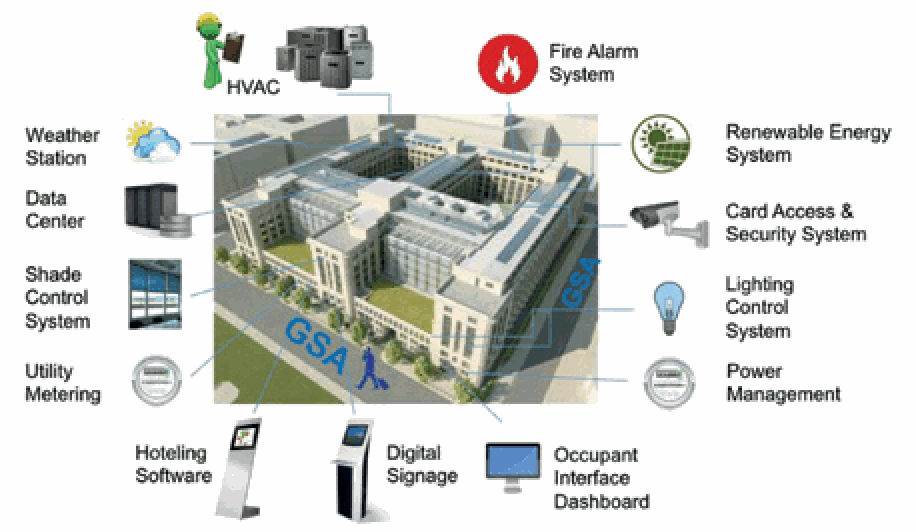

NIST Special Publication · PDF 原文抽出
Annual Report 2018: NIST/ITL Cybersecurity Program
年次報告書2018：NIST/ITLサイバーセキュリティプログラム
NIST SP 800-206（Annual Report 2018: NIST/ITL Cybersecurity Program）の英文と日本語訳を段落ごとに並べた閲覧用ページです。NIST情報技術研究所（ITL）の2018会計年度におけるサイバーセキュリティプログラムの研究活動と成果をまとめます。 翻訳は有志による非公式のもので、NIST および米国商務省が作成・承認・推奨したものではありません。要件の確認にはNIST の正式版 PDFを参照してください。
PDF から抽出した原文は、原本のページ画像と照合済みです。
本文の数式はLaTeXの構造からKaTeXで表示しています。
2018
2018年
ANNUAL REPORT
年次報告書
NIST/ITL CYBERSECURITY PROGRAM
NIST/ITL サイバーセキュリティプログラム
NIST SPECIAL PUBLICATION 800-206
NIST 特別刊行物 800-206
ANNUAL REPORT 2018
年次報告書 2018
NIST/ITL CYBERSECURITY PROGRAM
NIST/ITL サイバーセキュリティプログラム
PATRICK O’REILLY, EDITOR
パトリック・オライリー、編集者
KRISTINA RIGOPOULOS, EDITOR
クリスティーナ・リゴポロス、編集者
Computer Security Division
コンピュータセキュリティ部門
Applied Cybersecurity Division
応用サイバーセキュリティ部門
Information Technology Laboratory
情報技術研究所
Information Technology Laboratory
情報技術研究所
CO-EDITORS:
共同編集者:
Larry Feldman
Greg Witte
G2, Incorporated (“G2”)
a Huntington Ingalls Company
Annapolis Junction, Maryland
Larry Feldman
Greg Witte
G2, Incorporated（“G2”）
Huntington Ingalls傘下企業
メリーランド州アナポリス・ジャンクション
THIS PUBLICATION IS AVAILABLE FREE OF CHARGE FROM
本刊行物は以下から無料で入手可能である
https://doi.org/10.6028/NIST.SP.800-206
https://doi.org/10.6028/NIST.SP.800-206
JANUARY 2020
2020年1月
U.S. DEPARTMENT OF COMMERCE Wilbur L. Ross, Jr., Secretary
米国商務省 ウィルバー・L・ロス・ジュニア長官
NATIONAL INSTITUTE OF STANDARDS AND TECHNOLOGY Walter Copan, NIST Director and Under Secretary of Commerce for Standards and Technology
国立標準技術研究所 ウォルター・コーパン（NIST所長 兼 標準・技術担当商務次官）
THIS PAGE IS INTENTIONALLY LEFT BLANK
このページは意図的に白紙としている
AUTHORITY
権限
This publication has been developed by NIST in accordance with its statutory responsibilities under the Federal Information Security Modernization Act (FISMA) of 2014, 44 U.S.C. § 3551 et seq., Public Law (P.L.) 113-283. NIST is responsible for developing information security standards and guidelines, including minimum requirements for federal information systems, but such standards and guidelines shall not apply to national security systems without the express approval of appropriate federal officials exercising policy authority over such systems. This guideline is consistent with the requirements of the Office of Management and Budget (OMB) Circular A-130.
本刊行物は、2014年連邦情報セキュリティ近代化法（FISMA）、合衆国法典第44編第3551条以下、公法（P.L.）113-283に基づく法定責任に従ってNISTにより作成された。NISTは、連邦情報システムに対する最低限の要件を含む情報セキュリティ標準およびガイドラインの策定に責任を負うが、かかる標準およびガイドラインは、国家安全保障システムに対して政策権限を行使する適切な連邦政府職員の明示的な承認がない限り、当該システムには適用されないものとする。本ガイドラインは、行政管理予算局（OMB）サーキュラーA-130の要件と整合している。
Nothing in this publication should be taken to contradict the standards and guidelines made mandatory and binding on federal agencies by the Secretary of Commerce under statutory authority. Nor should these guidelines be interpreted as altering or superseding the existing authorities of the Secretary of Commerce, Director of the OMB, or any other federal official. This publication may be used by nongovernmental organizations on a voluntary basis and is not subject to copyright in the United States. Attribution would, however, be appreciated by NIST.
本刊行物のいかなる内容も、商務長官が法定権限に基づき連邦機関に対して義務的かつ拘束力のあるものとした標準およびガイドラインと矛盾するものと解釈されるべきではない。また、これらのガイドラインは、商務長官、OMB長官、またはその他のいかなる連邦政府職員の既存の権限をも変更し、またはそれに取って代わるものと解釈されるべきではない。本刊行物は、非政府組織が任意で使用してもよく、米国においては著作権の対象とならない。ただし、出典を表示していただければNISTとしては幸いである。
National Institute of Standards and Technology Special Publication 800-206 Natl. Inst. Stand. Technol. Spec. Publ. 800-206, 31 pages (January 2020)
米国国立標準技術研究所 特別刊行物 800-206 Natl. Inst. Stand. Technol. Spec. Publ. 800-206, 31 pages (January 2020)
CODEN: NSPUE2
CODEN: NSPUE2
This publication is available free of charge from: https://doi.org/10.6028/NIST.SP.800-206
本刊行物は以下から無料で入手可能である：https://doi.org/10.6028/NIST.SP.800-206
REPORTS ON COMPUTER SYSTEMS TECHNOLOGY
コンピュータシステム技術に関する報告書
The Information Technology Laboratory (ITL) at the National Institute of Standards and Technology (NIST) promotes the U.S. economy and public welfare by providing technical leadership for the Nation’s measurement and standards infrastructure. ITL develops tests, test methods, reference data, proof of concept implementations, and technical analyses to advance the development and productive use of information technology. ITL’s responsibilities include the development of management, administrative, technical, and physical standards and guidelines for the cost-effective security and privacy of other than national security-related information in federal information systems. The Special Publication 800-series reports on ITL’s research, guidelines, and outreach efforts in information system security, and its collaborative activities with industry, government, and academic organizations.
米国国立標準技術研究所（NIST）の情報技術研究所（ITL）は、国家の計測および標準の基盤に対する技術的リーダーシップを提供することにより、米国の経済と公共の福祉を促進している。ITLは、情報技術の開発と生産的な利用を促進するために、テスト、テスト手法、参照データ、概念実証の実装、および技術分析を開発している。ITLの責務には、連邦情報システムにおける国家安全保障関連以外の情報について、費用対効果の高いセキュリティとプライバシーを実現するための、管理面、事務面、技術面および物理面の標準およびガイドラインの策定が含まれる。特別刊行物800シリーズは、情報システムセキュリティにおけるITLの研究、ガイドライン、およびアウトリーチ活動、ならびに産業界、政府機関および学術機関との協働活動について報告するものである。
DISCLAIMER
免責事項
Any mention of commercial products or organizations is for informational purposes only; it is not intended to imply recommendation or endorsement by the National Institute of Standards and Technology, nor is it intended to imply that the products identified are necessarily the best available for the purpose.
商用の製品または組織へのいかなる言及も、情報提供のみを目的としたものであり、米国国立標準技術研究所による推奨または支持を意味することを意図したものではなく、また、言及された製品がその目的に対して必ずしも入手可能な最良のものであることを意味することを意図したものでもない。
TRADEMARK INFORMATION
商標情報
All names are trademarks or registered trademarks of their respective owners.
すべての名称は、それぞれの所有者の商標または登録商標である。
FOREWORD
序文
Cybersecurity: Picking up the pace
サイバーセキュリティ：ペースの加速
“The more things change, the more they stay the same.” (From a French proverb)
「変われば変わるほど、同じままである。」（フランスのことわざより）
Ten years ago, the National Institute of Standards and Technology (NIST) annual report on cybersecurity featured accomplishments and challenges in quantum computing, encryption, identity management, personal identity verification, vulnerability measurements, assessing the security controls in federal information systems, mobile devices, international standardization, and addressing the needs of small and medium-sized businesses, all of which were among the many pressing topics of the day. Sound familiar?
10年前、米国国立標準技術研究所（NIST）のサイバーセキュリティに関する年次報告書は、量子コンピューティング、暗号化、アイデンティティ管理、個人アイデンティティ検証、脆弱性測定、連邦情報システムにおけるセキュリティ管理策の評価、モバイルデバイス、国際標準化、および中小企業のニーズへの対応における成果と課題を取り上げた。これらはいずれも、当時の数多くの喫緊のトピックに含まれていた。聞き覚えがないだろうか。
Reviewing those topics in the NIST Fiscal Year 2008 report on computer security activities and accomplishments might lead some to conclude that the old French proverb is true when it comes to cybersecurity. But in this case, a more appropriate statement might be, “The more things appear to stay the same, the more quickly they actually change.”
コンピュータセキュリティの活動と成果に関するNISTの2008会計年度の報告書でこれらのトピックを見直すと、サイバーセキュリティに関しては、あの古いフランスのことわざが当てはまると結論付ける人もいるかもしれない。しかしこの場合、より適切な言い方は「物事は同じままであるように見えるほど、実際にはより急速に変化している」であろう。
That certainly is true for the threat environment in which we function today. New attack surfaces, new vulnerabilities, and new attackers emerge constantly. The creativity, the dramatically increased frequency of attacks, and the ready availability of new technologically enhanced modes of attack are even more difficult to identify—much less protect, detect, respond to, and recover from—before they inflict great harm to U.S. organizations and our economy, security, and society in general.
これは、今日われわれが活動している脅威環境について確かに当てはまる。新たなアタックサーフェス、新たな脆弱性、そして新たな攻撃者が絶えず出現している。攻撃の創造性、劇的に増加した攻撃の頻度、および技術的に強化された新たな攻撃手法がすぐに入手できる状況は、それらが米国の組織ならびにわれわれの経済、安全保障および社会全般に大きな損害を与える前に特定することが、いっそう困難になっている。ましてや、それらから防御し、それらを検知し、それらに対応し、それらから復旧することはなおさらである。
A decade later, these changes have enormous implications in a world that is so much more dependent on digital devices, systems, and connectivity for carrying out both the specialized and ordinary activities that drive our economy and safeguard our security. They create thorny challenges as we seek balance in battling attacks and attackers while preserving our intellectual property, privacy, civil rights, and liberties.
10年後の今、これらの変化は、経済を動かし安全を守る専門的な活動と日常的な活動の両方を遂行するうえで、デジタルデバイス、システム、および接続性にはるかに大きく依存するようになった世界において、甚大な影響を及ぼしている。知的財産、プライバシー、市民権、および自由を守りつつ、攻撃や攻撃者との戦いにおいて均衡を模索する中で、これらの変化は厄介な課題を生み出している。
The speed with which our cybersecurity risks change means that everyone involved in managing those risks needs to pick up the pace. That is what NIST is doing with the help of many partners and through varied programs and approaches.
サイバーセキュリティリスクが変化する速さは、そうしたリスクのマネジメントに関与するすべての者がペースを上げる必要があることを意味する。それこそが、NISTが多くのパートナーの協力を得て、多様なプログラムやアプローチを通じて行っていることである。
In Fiscal Year 2018, we received and worked on new cybersecurity-related assignments from Congress and the President. Those have led us to focus our attention on assisting small businesses, forging practical solutions to address security concerns raised by the Internet of Things, and updating our guidance on risk management and security controls for federal agencies and others. We also launched major new initiatives, including the development of a voluntary framework for privacy risk management, standards for post-quantum cryptography, and revisions to Federal Information Processing Standard (FIPS) 140-3,1 Security Requirements for Cryptographic Modules.
2018会計年度、NISTは議会および大統領からサイバーセキュリティ関連の新たな任務を受け、それらに取り組んだ。これらを受けて、NISTは、小規模事業者の支援、モノのインターネット（IoT）がもたらすセキュリティ上の懸念に対処するための実用的な解決策の構築、ならびに連邦機関その他の組織向けのリスクマネジメントおよびセキュリティ管理策に関するガイダンスの更新に注力することとなった。また、NISTは主要な新規イニシアチブも開始した。これには、プライバシーリスクマネジメントのための自主的なフレームワークの開発、耐量子暗号の標準、ならびに連邦情報処理規格（FIPS）140-31「Security Requirements for Cryptographic Modules」（暗号モジュールのセキュリティ要件）の改訂が含まれる。
One thing has remained constant over the past decade: our commitment to cultivating trust in information and the technology that drives the development and handling of that information. This annual report focuses on some of NIST’s most noteworthy cybersecurity achievements in 2018 and offers insights into our current priorities and strategies. For a more complete review of our work, check out our primary cybersecurity website.2
過去10年間、変わらないことが1つある。それは、情報、およびその情報の開発と取扱いを推進する技術に対する信頼を育むという、我々のコミットメントである。本年次報告書は、2018年におけるNISTの最も注目すべきサイバーセキュリティ上の成果のいくつかに焦点を当て、現在の優先事項と戦略についての見通しを示す。我々の取り組みのより完全なレビューについては、NISTの主要なサイバーセキュリティウェブサイト2を参照されたい。
NIST welcomes all suggestions for how we can improve our cybersecurity work to better serve the public and private sectors. And, by all means, please join us as we pick up the pace.
NISTは、公共部門および民間部門によりよく貢献できるよう、サイバーセキュリティに関する取り組みを改善する方法についてのあらゆる提案を歓迎する。そして、我々がペースを上げていく中で、ぜひとも加わっていただきたい。
Donna F. Dodson（NISTチーフサイバーセキュリティアドバイザー）の肖像写真。 ［人物の写真。人物が写っているため、この非公式サイトには掲載していない。原本 PDF を参照。］
Donna F. Dodson NIST Chief Cybersecurity Advisor
Donna F. Dodson NISTチーフサイバーセキュリティアドバイザー
TABLE OF CONTENTS
目次
Introduction . . . . . . . . . . . . . . . . . . . . . . . . . . . . . . . . . . . . . . . . . . . . . . 1
はじめに . . . . . . . . . . . . . . . . . . . . . . . . . . . . . . . . . . . . . . . . . . . . . . 1
Imperative 1 – Advancing Cybersecurity and Privacy Standards . . . . . . . . . . . . . . 3
重点課題1 – サイバーセキュリティおよびプライバシー標準の推進 . . . . . . . . . . . . . . 3
Imperative 2 – Enhancing Risk Management . . . . . . . . . . . . . . . . . . . . . . . . . 5
重点課題2 – リスク管理の強化 . . . . . . . . . . . . . . . . . . . . . . . . . 5
Imperative 3 – Strengthening Cryptographic Standards and Validation . . . . . . . . . 8
重点課題3 – 暗号標準および検証の強化 . . . . . . . . . 8
Imperative 4 – Advancing Cybersecurity Research and Applications Development . . . . . . . . . . . . . . . . . . . . . . . . 12
重点課題4 – サイバーセキュリティ研究およびアプリケーション開発の推進 . . . . . . . . . . . . . . . . . . . . . . . . 12
Imperative 5 – Improving Cybersecurity Awareness, Training, Education, and Workforce Development . . . . . . . . . . . . . . . . . . . . . . . . . 15
重点課題5 – サイバーセキュリティの意識向上、訓練、教育、および人材育成の改善 . . . . . . . . . . . . . . . . . . . . . . . . . 15
Imperative 6 – Enhancing Identity and Access Management . . . . . . . . . . . . . . . . 19
重点課題6 – アイデンティティ管理およびアクセス管理の強化 . . . . . . . . . . . . . . . . 19
Imperative 7 – Bolstering Infrastructure Protection . . . . . . . . . . . . . . . . . . . . . 21
重点課題7 – インフラストラクチャ保護の強化 . . . . . . . . . . . . . . . . . . . . . 21
Imperative 8 – Securing Emerging Technologies . . . . . . . . . . . . . . . . . . . . . . . 24
重点課題8 – 新興技術のセキュリティ確保 . . . . . . . . . . . . . . . . . . . . . . . . . . . . . 24
Imperative 9 – Advancing Security Test and Measurement Tools . . . . . . . . . . . . . 29
重点課題9 – セキュリティ試験および測定ツールの推進 . . . . . . . . . . . . . 29
THIS PAGE IS INTENTIONALLY LEFT BLANK
このページは意図的に白紙としている
INTRODUCTION
はじめに
It is often said that cybersecurity is about people, process, and technology. That’s a convenient way to think about cybersecurity challenges, and it is the primary approach that the National Institute of Standards and Technology (NIST) takes in carrying out its cybersecurity mission. This report highlights NIST’s Fiscal Year (FY) 2018 cybersecurity-related accomplishments and includes many examples of how the NIST Information Technology Laboratory (ITL) delivers value to the nation by focusing on each element of the people, process, and technology triad. Importantly, NIST strives to address those three areas in an integrated fashion, knowing that siloed thinking about cybersecurity is not a viable path to success.
サイバーセキュリティは人、プロセス、および技術に関するものであるとよく言われる。これはサイバーセキュリティの課題を考えるうえで便利な方法であり、米国国立標準技術研究所（NIST）がサイバーセキュリティに関する使命を遂行する際に採る主要なアプローチでもある。本報告書は、NISTの2018会計年度（FY）におけるサイバーセキュリティ関連の成果を取り上げ、NISTの情報技術研究所（ITL）が、人、プロセス、技術という3要素のそれぞれに焦点を当てることによって国家に価値をもたらしている多くの例を含んでいる。重要なこととして、NISTは、サイバーセキュリティについてのサイロ化された考え方は成功への現実的な道ではないと認識したうえで、これら3つの領域に統合的に取り組むよう努めている。
NIST carries out its cybersecurity responsibilities through an open, transparent, and inclusive approach, teaming with organizations in the private sector, non-profit sphere, academia, and government at multiple levels. It does so by cooperating with partners in the United States and abroad who contribute to the research, development, standards, and applications that are all needed to advance both the state-of-the-art and the state-of-practice when it comes to cybersecurity. NIST is also assisted in identifying emerging managerial, technical, administrative, and physical safeguard issues by the Information Security and Privacy Advisory Board (ISPAB).3 ISPAB is the Federal Advisory Committee4 that advises NIST, the Secretaries of Commerce and Homeland Security, and the Office of Management and Budget on security and privacy matters.
NISTは、オープンで透明性が高く包摂的なアプローチによりサイバーセキュリティに関する責務を遂行しており、民間部門、非営利分野、学術界、および複数のレベルの政府の組織と連携している。NISTは、サイバーセキュリティに関して最先端技術（state-of-the-art）と実務水準（state-of-practice）の両方を前進させるために必要となる研究、開発、標準、および応用に貢献する米国内外のパートナーと協力することによって、これを行っている。また、NISTは、管理面、技術面、事務面、および物理面の保護措置に関する新たな課題を特定するにあたり、情報セキュリティ・プライバシー諮問委員会（ISPAB）3の支援を受けている。ISPABは、セキュリティおよびプライバシーに関する事項についてNIST、商務長官、国土安全保障長官、および行政管理予算局に助言を行う連邦諮問委員会4である。
All of NIST’s cybersecurity work is conducted in an environment that demands technical excellence and integrity and that aims to cultivate trust in technologies and institutions. NIST’s portfolio of cybersecurity programs works along the full spectrum of cybersecurity challenges and potential, from foundational research to applied engineering and transition to practice.
NISTのサイバーセキュリティに関する取り組みはすべて、技術的な卓越性と誠実性を求め、技術および機関に対する信頼を育むことを目指す環境の中で行われている。NISTのサイバーセキュリティプログラムのポートフォリオは、基礎研究から応用工学、さらに実践への移行に至るまで、サイバーセキュリティの課題と可能性の全範囲にわたって活動している。
NIST knows that improving all aspects of cybersecurity is an imperative, not just for the agency but for all of society that relies on technologies, products, and systems. NIST’s FY18 premier cybersecurity accomplishments and brief insights into FY19 priorities are captured in the cybersecurity imperatives that follow.
NISTは、サイバーセキュリティのあらゆる側面を改善することが、NISTにとってだけでなく、技術、製品、およびシステムに依存する社会全体にとって必須課題（imperative）であることを認識している。NISTのFY18における主要なサイバーセキュリティ上の成果と、FY19の優先事項についての簡潔な見通しは、以下に続くサイバーセキュリティの必須課題にまとめられている。
INTRODUCTION
はじめに
FROM STATE-OF-THE-ART TO STATE-OF-ACTUAL PRACTICE
最先端技術（STATE-OF-THE-ART）から実際の運用（STATE-OF-ACTUAL PRACTICE）へ
NIST’s research, standards, guidelines, and recommended best practices are aimed at improving the effectiveness of cybersecurity strategies and measures. They offer an expanding and up-to-date toolkit that information technology (IT) and operational technology (OT) providers and users can put to work to justifiably enhance trust in IT and related technologies. Historically, much of NIST’s outputs have been developed primarily for government agencies that are directed by statute and policy to use the Institute’s cybersecurity standards and guidelines. However, they also are widely and voluntarily relied upon by private sector cybersecurity practitioners, product vendors and integrators, state and local agencies, and others who see value in NIST’s information and services.
NISTの研究、標準、ガイドライン、および推奨されるベストプラクティスは、サイバーセキュリティの戦略および対策の有効性を向上させることを目的としている。これらは、情報技術（IT）および運用技術（OT）のプロバイダとユーザが、ITおよび関連技術に対する信頼を正当な根拠をもって高めるために活用できる、拡大し続ける最新のツールキットを提供する。歴史的に、NISTの成果物の多くは、法令および政策によって同研究所のサイバーセキュリティ標準およびガイドラインを使用するよう指示されている政府機関向けに主として開発されてきた。しかし、これらは、民間部門のサイバーセキュリティ実務者、製品ベンダおよびインテグレータ、州および地方の機関、その他NISTの情報とサービスに価値を見いだす者によっても、広く自発的に依拠されている。
NIST recognizes that many systems owners and administrators often find it difficult to sort through the voluminous output of NIST cybersecurity guidance to identify standards and guidelines that apply to their areas of interest. They may struggle to understand how these resources apply to their environments and how NIST’s cybersecurity products can be used to address their requirements. They may have difficulty with usability implications of integrating cybersecurity into their systems. These current and potential users need assistance in finding the kind of applications support that NIST offers in addressing some specific cybersecurity implementation problems. In FY18, NIST increased its attention to issues associated with transition to practice with an eye on accelerating adoption of cybersecurity standards, guidelines, and best practices. NIST is ramping up that priority even more steeply in 2019, often through the National Cybersecurity Center of Excellence (NCCoE) as well as throughout the Information Technology Laboratory (ITL). This report spotlights some of those initiatives.
NISTは、多くのシステム所有者や管理者が、NISTの膨大なサイバーセキュリティガイダンスをより分けて、自らの関心分野に適用される標準およびガイドラインを特定することに困難を感じる場合が多いことを認識している。彼らは、これらのリソースが自らの環境にどのように適用されるのか、またNISTのサイバーセキュリティ成果物を自らの要件に対処するためにどのように利用できるのかを理解するのに苦労することがある。サイバーセキュリティを自らのシステムに統合することがユーザビリティに及ぼす影響への対応に困難を抱えることもある。これらの現在および潜在的なユーザは、特定のサイバーセキュリティ実装上の問題に対処するうえでNISTが提供している種類の応用支援を見つけるための手助けを必要としている。FY18において、NISTは、サイバーセキュリティの標準、ガイドライン、およびベストプラクティスの採用を加速することを視野に入れ、実践への移行に伴う課題への注力を強めた。NISTは2019年に、多くの場合は国家サイバーセキュリティ・センター・オブ・エクセレンス（NCCoE）を通じて、また情報技術研究所（ITL）全体にわたって、その優先度をさらに急速に引き上げている。本報告書は、そうしたイニシアチブのいくつかを取り上げる。
IMPERATIVE 1
重要課題 1
Advancing Cybersecurity and Privacy Standards
サイバーセキュリティおよびプライバシー標準の推進
NIST leverages foundational and applied research as well as extensive experience acquired through decades of leadership and participation in developing national and international standards to advance cybersecurity and privacy standards. Today, these standards activities span cybersecurity, privacy, and cryptography, as well as newer and emerging technology spaces such as Artificial Intelligence and the Internet of Things.
NISTは、基礎研究および応用研究に加え、国内標準および国際標準の策定における数十年にわたる主導と参画を通じて培った豊富な経験を活用し、サイバーセキュリティおよびプライバシーの標準を推進している。今日、これらの標準化活動は、サイバーセキュリティ、プライバシー、暗号技術に加え、人工知能（Artificial Intelligence）やモノのインターネット（Internet of Things）などの比較的新しい技術分野および新興技術分野にも及んでいる。
About 40 NIST staff work with industry and other agencies to develop cybersecurity and privacy standards through voluntary consensus Standards Developing Organizations (SDOs). The NIST Cybersecurity Framework (CSF) has provided additional focus and a systematic approach to standards work in this space. This international standards strategy follows the guidelines defined in NISTIR 8074, Cybersecurity Interagency Report on Strategic U.S. Government Engagement in International Standardization to Achieve U.S. Objectives for Cybersecurity.
約40名のNIST職員が、産業界や他の機関と協力し、任意合意に基づく標準化団体（SDO）を通じてサイバーセキュリティおよびプライバシーの標準を策定している。NISTサイバーセキュリティフレームワーク（CSF）は、この分野の標準化作業にさらなる焦点と体系的なアプローチをもたらしてきた。この国際標準化戦略は、NISTIR 8074「Cybersecurity Interagency Report on Strategic U.S. Government Engagement in International Standardization to Achieve U.S. Objectives for Cybersecurity」に定められた指針に従っている。
![Figure 1. NIST staff participation in cybersecurity standards activities. A low-resolution organization chart split by a dashed line. Upper part, “International”: IEEE (green oval) linked by a dotted “PSDO” line to ISO; ISO and IEC (blue boxes) both connect to “ISO/IEC JTC 1 Information Technology”, whose subcommittees are SC 6 (Telecom & Info exchange), SC 7 (Software & systems engineering), SC 17 (Cards & personal identification), SC 22 (Programming languages), SC 27 (IT security techniques), SC 37 (Biometrics) and SC 38; dotted lines labeled “PAS Submitters” link OASIS, W3C, TCG and OMG (green ovals) to JTC 1. ISO also has “ISO TC 68 Banking, Securities and Other Financial Services” (with “SC 2 Security management and general banking operations”) and “ISO TC 307 Blockchain”. IETF is a green oval. Yellow boxes ICAO, ITU-T (with SG 9, SG 13, SG 15, SG 17) and ITU-R (with SG 4, SG 5). Green ovals ISA, 3GPP, WiMAX, Open Gp, 3GPP2, ATIS and “others”. Lower part, “US Counterparts”: “ANSI (US Member – ISO)”, “IEEE SA” and the yellow “Department of State (US Member – ITU)”. Lines labeled “US TAG Report Path” lead from ANSI to “X9 (US TAG – ISO TC 68)”, with “X9F Data & Information Security”, and to “INCITS (US TAG – ISO/IEC JTC 1)”, with B10 (ID Cards & Related Devices), CS1 (Cyber Security), DAPS38, M1 (Biometrics), PL22 (Programming languages), T3 and DLT (Blockchain); “IEEE ITC 1/SC 7 TAG” is linked to INCITS by a “US TAG Report Path”. A box reads “Source: ITL Standards Liaison August 2017”. The key explains PSDO (Partner Standards Development Organization), PAS (Publicly Available Specification), blue boxes (private sector, national member-based international standards body), yellow boxes (UN agency, member state-based international standards body) and green ovals (international standards developer, e.g., consortium, industry association). Some small sub-labels are not legible at this resolution.](assets/206/p0012-figure-02.png)
図1. サイバーセキュリティ標準化活動へのNIST職員の参画。破線で上下に分けた解像度の低い組織図である。上部「International」（国際）：IEEE（緑の楕円）が点線「PSDO」でISOとつながる。ISOとIEC（青の箱）はともに「ISO/IEC JTC 1 Information Technology」（情報技術）につながり、その分科委員会として SC 6（Telecom & Info exchange、通信と情報交換）、SC 7（Software & systems engineering、ソフトウェアとシステムのエンジニアリング）、SC 17（Cards & personal identification、カードと個人識別）、SC 22（Programming languages、プログラミング言語）、SC 27（IT security techniques、ITセキュリティ技術）、SC 37（Biometrics、バイオメトリクス）、SC 38 が並ぶ。「PAS Submitters」（PAS提出者）と記した点線が OASIS、W3C、TCG、OMG（緑の楕円）を JTC 1 に結ぶ。ISOの下には「ISO TC 68 Banking, Securities and Other Financial Services」（銀行・証券・その他の金融サービス。下に「SC 2 Security management and general banking operations」）と「ISO TC 307 Blockchain」（ブロックチェーン）もある。IETFは緑の楕円である。黄色の箱は ICAO、ITU-T（SG 9、SG 13、SG 15、SG 17）、ITU-R（SG 4、SG 5）である。緑の楕円 ISA、3GPP、WiMAX、Open Gp、3GPP2、ATIS、「others」（その他）もある。下部「US Counterparts」（米国の対応組織）：「ANSI (US Member – ISO)」、「IEEE SA」、黄色の「Department of State (US Member – ITU)」（国務省）がある。「US TAG Report Path」（米国TAGの報告経路）と記した線が ANSI から「X9 (US TAG – ISO TC 68)」（下に「X9F Data & Information Security」）と「INCITS (US TAG – ISO/IEC JTC 1)」へ延び、INCITSの下に B10（ID Cards & Related Devices）、CS1（Cyber Security）、DAPS38、M1（Biometrics）、PL22（Programming languages）、T3、DLT（Blockchain）が並ぶ。「IEEE ITC 1/SC 7 TAG」は「US TAG Report Path」で INCITS とつながる。「Source: ITL Standards Liaison August 2017」（出典：ITL標準化連絡担当、2017年8月）の箱がある。凡例は、PSDO（標準開発機関パートナー）、PAS（公開仕様）、青の箱（民間部門、各国会員制の国際標準化団体）、黄の箱（国連機関、加盟国制の国際標準化団体）、緑の楕円（国際標準化の策定機関。例：コンソーシアム、業界団体）を説明する。一部の小さな副ラベルはこの解像度では読めない。
未レビュー訳Figure 1. NIST staff participation in cybersecurity standards activities
図1. サイバーセキュリティ標準化活動へのNIST職員の参画
IMPERATIVE 1 — Advancing Cybersecurity and Privacy Standards
重要課題 1 — サイバーセキュリティおよびプライバシー標準の推進
During FY18, NIST staff actively contributed to and held leadership positions in various SDOs, including the American National Standards Institute (ANSI), the International Organization for Standardization (ISO), the International Electrotechnical Commission (IEC), the Institute of Electrical and Electronics Engineers (IEEE), the Internet Engineering Task Force (IETF), the T Trusted Computing Group (TCG), the World Wide Web Consortium (W3C), and the 3rd Generation Partnership Project (3GPP). Many of the international SDOs have domestic counterparts. Figure 1, on the previous page; indicates the SDOs in which NIST is actively engaged.
2018会計年度（FY18）中、NIST職員は、米国国家規格協会（ANSI）、国際標準化機構（ISO）、国際電気標準会議（IEC）、米国電気電子学会（IEEE）、インターネット技術タスクフォース（IETF）、トラステッドコンピューティンググループ（TCG）、World Wide Web Consortium（W3C）、第3世代パートナーシッププロジェクト（3GPP）をはじめとするさまざまなSDOに積極的に貢献し、指導的な役職を務めた。国際的なSDOの多くには国内の対応組織がある。前ページの図1は、NISTが積極的に関与しているSDOを示している。
NIST staff have been actively participating in ISO standards bodies to raise awareness and influence the development of privacy standards, including a new family of ISO standards (developed primarily in ISO/IEC Joint Technical Committee (JTC 1)/ Subcommittee (SC) 27) that is aligned with the principles of the NIST Cybersecurity Framework. Notably, NIST staff participates in the Technical Committee ISO/Program Committee (PC) 317 – Consumer Protection: Privacy by Design for Consumer Goods and Services, which focuses on developing ISO 31700 Consumer protection: Privacy by Design for Consumer Goods and Services. NIST staff has also been engaged with several privacy standards activities of the ITC 1/SC 27/Working Group (WG) 5. By participating, NIST aims to sustain and promote the development and use of the NIST Privacy Framework and its principles in the international arena.
NIST職員は、意識の向上を図り、プライバシー標準の策定に影響を与えるために、ISOの標準化組織に積極的に参加してきた。これらの標準には、NISTサイバーセキュリティフレームワークの原則に整合した新しいISO標準ファミリー（主にISO/IEC合同技術委員会（JTC 1）/分科委員会（SC）27で策定）が含まれる。特に、NIST職員は専門委員会ISO/プログラム委員会（PC）317（消費者保護：消費者向け商品およびサービスのためのプライバシー・バイ・デザイン）に参加しており、同委員会はISO 31700「Consumer protection: Privacy by Design for Consumer Goods and Services」の策定に注力している。NIST職員はまた、JTC 1/SC 27/作業グループ（WG）5のいくつかのプライバシー標準化活動にも携わってきた。こうした参加を通じて、NISTは、国際的な場においてNISTプライバシーフレームワークとその原則の策定および利用を維持し促進することを目指している。
NIST participation has also grown considerably in Internet of Things (IoT) standardization activities, including JTC 1/SC 41 (IoT architecture and vocabulary, IoT Interoperability, and IoT Applications), JTC 1/SC 27 (IoT aspects of Security and Privacy), IETF – SW Updates for IoT, and the International Telecommunications Union–Telecommunication Standardization Sector (ITU-T): Sector Joint Coordination Activity on IoT and “IoT and Smart Cities.” NIST has been instrumental in promoting and participating in the development of a family of voluntary ISO standards that align with NIST’s cryptographic module validation standard and related specifications. NIST serves as the project editor for nine of those standards. FIPS 140-3, Security Requirements for Cryptographic Modules, points to ISO/IEC 19790, Security Requirements for Cryptographic Modules. Testing for these requirements will be performed in accordance with ISO/IEC 24759, Test Requirements for Cryptographic Modules. This is an ongoing effort and will continue over the next several years to support a smooth transition path to those using FIPS 140-3 specifications.
NISTの参画は、モノのインターネット（IoT）の標準化活動においても大幅に拡大した。これには、JTC 1/SC 41（IoTアーキテクチャおよび語彙、IoT相互運用性、IoTアプリケーション）、JTC 1/SC 27（セキュリティおよびプライバシーのIoTに関する側面）、IETF – SW Updates for IoT、ならびに国際電気通信連合電気通信標準化部門（ITU-T）のIoTおよび「IoTとスマートシティ」に関する部門合同調整活動が含まれる。NISTは、NISTの暗号モジュール検証標準および関連仕様に整合する任意のISO標準ファミリーの策定を推進し、その策定に参加するうえで、重要な役割を果たしてきた。NISTは、これらの標準のうち9件についてプロジェクトエディターを務めている。FIPS 140-3「Security Requirements for Cryptographic Modules」は、ISO/IEC 19790「Security Requirements for Cryptographic Modules」を参照している。これらの要件に対する試験は、ISO/IEC 24759「Test Requirements for Cryptographic Modules」に従って実施される。これは継続中の取り組みであり、FIPS 140-3の仕様を使用する者に円滑な移行経路を提供できるよう、今後数年間にわたって続けられる。
In FY19, NIST staff will continue to lead and participate in cybersecurity and privacy standardization efforts with an increased focus on cybersecurity, privacy, and cryptography, as well as on new and emerging areas such as Artificial Intelligence and the Internet of Things. NIST will continue to provide thoughtful leadership in many SDOs by actively participating in those organizations and contributing publications and papers.
2019会計年度（FY19）において、NIST職員は、サイバーセキュリティ、プライバシー、暗号技術に加え、人工知能（Artificial Intelligence）やモノのインターネット（Internet of Things）などの新規分野および新興分野にこれまで以上に重点を置きながら、サイバーセキュリティおよびプライバシーの標準化の取り組みを引き続き主導し、これに参加する。NISTは、多くのSDOに積極的に参加し、刊行物や論文を提供することにより、それらの組織において思慮深いリーダーシップを引き続き発揮する。
IMPERATIVE 2
重要課題 2
Enhancing Risk Management
リスク管理の強化
Increasingly, NIST’s work is driven by a recognition that risk management should be a fundamental driver for every organization’s decisions about investments in cybersecurity—whether those investments take shape as people, processes, or technology. NIST considers managing risk to be an essential principle and process for organizations of any size or type to employ in planning and carrying out their cybersecurity programs and in making decisions about priorities.
NISTの取り組みは、リスク管理が、サイバーセキュリティへの投資（その投資が人材、プロセス、技術のいずれの形を取るかを問わない）に関するあらゆる組織の意思決定の基本的な推進要因であるべきだという認識に、ますます強く動かされるようになっている。NISTは、リスク管理を、規模や種類を問わずあらゆる組織がサイバーセキュリティプログラムを計画・実施し、優先順位に関する意思決定を行う際に用いるべき不可欠な原則およびプロセスであると考えている。
During FY18, NIST made significant strides in producing cybersecurity risk management approaches and tools and assisting organizations in their use. Most notably, these achievements included:
2018会計年度（FY18）中、NISTは、サイバーセキュリティリスク管理のアプローチとツールの作成、およびそれらの利用における組織への支援において大きく前進した。これらの成果のうち特に注目すべきものは以下のとおりである。
•Release of the first update of the Framework for Improving Critical Infrastructure Cybersecurity, popularly known as simply the “Cybersecurity Framework.” First produced in February 2014 with the active involvement of hundreds of organizations in the private and public sectors, Version 1.1 was released in April 2018. Based on the experience of Framework users and changes in the cybersecurity environment and technological advances, the revision added more content related to supply chain risk management and coordinated vulnerability disclosure. NIST added and clarified language regarding cybersecurity measurement with an emphasis on self-assessment. The number of downloads of Version 1.1 has far surpassed that of the initial version.
•一般に単に「サイバーセキュリティフレームワーク」として知られる「重要インフラのサイバーセキュリティを改善するためのフレームワーク」の最初の更新版のリリース。同フレームワークは、民間および公共部門の数百の組織の積極的な関与を得て2014年2月に初めて作成され、バージョン1.1は2018年4月にリリースされた。フレームワーク利用者の経験、ならびにサイバーセキュリティ環境の変化および技術の進歩に基づき、この改訂では、サプライチェーンリスク管理および協調的な脆弱性開示に関する内容が拡充された。NISTは、自己評価に重点を置いて、サイバーセキュリティの測定に関する記述を追加し、明確化した。バージョン1.1のダウンロード数は、初版のそれを大きく上回っている。
Recognizing and seeking to further stimulate international usage of the Cybersecurity Framework, NIST worked on a Spanish language translation, which is now available along with translations or adaptations provided by government agencies and industry leaders in Italian, Japanese, Hebrew, Arabic, and Portuguese. NIST also engaged more purposefully to promote the alignment and use of the Framework, especially in Latin America and Europe. In the international standards arena, NIST vigorously assisted in efforts to include the Framework into a key International Organization for Standardization (ISO) cybersecurity standard, a process that is still under way.
NISTは、サイバーセキュリティフレームワークの国際的な利用を認識し、これをさらに促進することを目指して、スペイン語訳に取り組んだ。この翻訳は、政府機関や業界のリーダーが提供したイタリア語、日本語、ヘブライ語、アラビア語、ポルトガル語の翻訳版または翻案版とともに、現在利用可能である。NISTはまた、特にラテンアメリカおよびヨーロッパにおいて、フレームワークとの整合およびその利用を促進するために、より明確な目的をもって関与した。国際標準の分野では、NISTは、国際標準化機構（ISO）の主要なサイバーセキュリティ標準にフレームワークを取り入れる取り組みを精力的に支援しており、このプロセスは現在も進行中である。
In addition, NIST included many more resources to aid in using the Cybersecurity Framework, many of which were generated by private sector, non-profit, and government organizations. NIST also launched a series of “Success Stories” highlighting the variety of ways in which organizations of all types and in all sectors are finding value in the Framework. Also in FY18, NIST recognized that new information products and tools are regularly being produced well beyond the initial Informative References included in Version 1.0 and pushed forward with an initiative that establishes a transparent, equitable process for organizations to propose new references, which are intended to be included as online Informative References associated with the Framework.
さらに、NISTは、サイバーセキュリティフレームワークの利用を支援するリソースを大幅に追加した。その多くは、民間部門、非営利組織、政府組織が作成したものである。NISTはまた、あらゆる種類、あらゆる部門の組織がフレームワークに価値を見いだしているさまざまな方法を紹介する一連の「成功事例（Success Stories）」を開始した。同じく2018会計年度（FY18）に、NISTは、バージョン1.0に含まれていた当初の参考情報（Informative References）をはるかに超えて、新しい情報成果物やツールが定期的に作成されていることを認識し、組織が新しい参考情報を提案するための透明かつ公平なプロセスを確立するイニシアチブを推進した。提案された参考情報は、フレームワークに関連付けられたオンラインの参考情報として収録されることが意図されている。
•Update of the NIST Risk Management Framework (RMF). For years, the RMF has been a mainstay for federal agencies and others to use in assessing and managing cybersecurity needs and challenges. Two drafts of the new version were produced in FY18—NIST Special Publication (SP) 800-37, Revision 2⁵— before becoming final in early FY19. Updates included significant new guidance in addressing privacy risks and integrating security and privacy into the design of systems. The RMF also references NIST systems security engineering guidance at appropriate points, including NIST SP 800-160,⁶ which addresses the engineering of trustworthy secure systems.
•NISTリスクマネジメントフレームワーク（RMF）の更新。長年にわたり、RMFは、連邦機関などがサイバーセキュリティのニーズと課題を評価し管理するために用いる主要なよりどころとなってきた。新バージョンであるNIST Special Publication (SP) 800-37, Revision 2⁵は、2018会計年度（FY18）に2つのドラフトが作成され、2019会計年度（FY19）初頭に最終版となった。更新内容には、プライバシーリスクへの対処、ならびにシステムの設計へのセキュリティとプライバシーの統合に関する重要な新しいガイダンスが含まれていた。RMFはまた、信頼できるセキュアなシステムのエンジニアリングを扱うNIST SP 800-160⁶を含め、NISTのシステムセキュリティエンジニアリングガイダンスを適切な箇所で参照している。
The revised RMF also offers additional guidance on:
改訂されたRMFは、以下に関する追加のガイダンスも提供している：
•Better preparing an organization’s senior leaders to execute the RMF, as well as how to communicate their protection plans and risk management strategies to system implementers and operators.
•組織の上級リーダーがRMFを実行するためのより適切な準備を行うこと、ならびに保護計画およびリスク管理戦略をシステムの導入者や運用者に伝達する方法。
•Incorporating supply chain risk management considerations. The RMF now addresses growing supply chain concerns, such as counterfeit components, tampering, theft, insertion of malicious software and hardware, poor manufacturing and development practices, and other potentially harmful activities that can impact an organization’s systems and systems components.
•サプライチェーンリスク管理の考慮事項の組み込み。RMFは現在、偽造コンポーネント、改ざん、盗難、悪意のあるソフトウェアおよびハードウェアの挿入、粗悪な製造・開発慣行、ならびに組織のシステムおよびシステムコンポーネントに影響を及ぼし得るその他の潜在的に有害な活動など、高まりつつあるサプライチェーン上の懸念に対処している。
•Supporting security and privacy safeguards. The RMF update provides organizations with a disciplined and structured process to select controls from the newly developed consolidated security and privacy control catalog in NIST’s SP 800-53 Revision 5.⁷ This should be valuable to companies and organizations beyond the federal government, considering how high profile the subject of privacy has become as of late.
•セキュリティおよびプライバシーの保護措置の支援。RMFの更新版は、NISTのSP 800-53 Revision 5⁷において新たに策定された、セキュリティとプライバシーを統合した管理策カタログから管理策を選択するための、規律ある体系的なプロセスを組織に提供する。最近プライバシーというテーマがいかに注目を集めるようになったかを考えると、これは連邦政府以外の企業や組織にとっても有益なはずである。
Importantly, the revised RMF clarifies its relationship to the Cybersecurity Framework. Aligning the RMF with other NIST guidance and publications will help federal agencies which are required to implement multiple frameworks. While adhering to the CSF is voluntary for private companies, its use for the federal government is not optional under Executive Order 13800.⁸ Use of the RMF is mandatory for federal agencies in accordance with the Federal Information Security Modernization Act (FISMA⁹). The RMF is also required and in widespread use in the Department of Defense and the intelligence community. That alignment of the Cybersecurity Framework and the RMF is still a work in progress with NIST committed to producing improved guidance in 2019.
重要な点として、改訂されたRMFは、サイバーセキュリティフレームワークとの関係を明確にしている。RMFを他のNISTのガイダンスおよび刊行物と整合させることは、複数のフレームワークの実装を求められている連邦機関の助けとなる。民間企業にとってCSFへの準拠は任意であるが、連邦政府によるCSFの使用は、大統領令（Executive Order）13800⁸の下では任意ではない。RMFの使用は、連邦情報セキュリティ近代化法（FISMA⁹）に従い、連邦機関にとって必須である。RMFはまた、国防総省およびインテリジェンスコミュニティにおいても義務付けられ、広く使用されている。サイバーセキュリティフレームワークとRMFのこの整合はなお作業の途上にあり、NISTは2019年に改善されたガイダンスを作成することを約束している。
•Systems Security Engineering: Considerations for a Multidisciplinary Approach in the Engineering of Trustworthy Secure Systems. The FY18 update of this publication addresses the engineering-driven perspective and actions necessary to develop more defensible and survivable systems, including the machine, physical, and human components that compose the systems as well as the capabilities and services delivered by those systems. It builds upon well-established international standards for systems and software and fuses systems security engineering methods, practices, and techniques. The objective is to address security issues from the perspective of stakeholder protection needs, concerns, and requirements using established engineering processes to ensure that those needs are addressed with appropriate fidelity and rigor early on and in a sustainable manner throughout the life cycle of the system. NIST also published a draft of the first in a series of specialty publications developed to support the flagship NIST Systems Security Engineering guideline. Volume 2 addresses cyber resiliency considerations for two important yet distinct communities of interest represented by organizations: those conducting new development of IT component products, systems, and services; and those with legacy systems (installed base) currently carrying out day-to-day missions and business functions.
•システムセキュリティエンジニアリング：信頼できるセキュアなシステムのエンジニアリングにおける学際的アプローチの考慮事項。本刊行物の2018会計年度（FY18）更新版は、システムを構成する機械的、物理的、人的な構成要素、ならびにそれらのシステムが提供する能力およびサービスを含め、より防御しやすく生存性の高いシステムを開発するために必要な、エンジニアリング主導の視点と行動を扱っている。同刊行物は、システムおよびソフトウェアに関する確立された国際標準を基礎とし、システムセキュリティエンジニアリングの手法、プラクティス、および技法を融合している。その目的は、確立されたエンジニアリングプロセスを用いて、ステークホルダーの保護ニーズ、懸念事項、および要求事項の観点からセキュリティ問題に対処し、それらのニーズが、早期の段階から、かつシステムのライフサイクル全体を通じて持続可能な形で、適切な忠実度と厳密さをもって対処されることを確実にすることである。NISTはまた、NISTの旗艦的なシステムセキュリティエンジニアリングガイドラインを支援するために作成される一連の専門刊行物の第1弾のドラフトを公開した。第2巻は、組織に代表される、重要でありながら互いに異なる2つの関心コミュニティ、すなわち、IT構成要素製品、システム、およびサービスの新規開発を行っている組織と、現在日々のミッションおよび業務機能を遂行しているレガシーシステム（導入済み基盤）を有する組織に向けて、サイバーレジリエンシーの考慮事項を扱っている。
•Privacy Framework: An Enterprise Risk Management Tool. There is growing concern regarding privacy issues across the country and throughout the world. Government organizations are putting into place multiplying privacy requirements that cross borders in their implementation. That is why in FY18, NIST laid the groundwork for developing a risk management-driven approach that could be used by any organization that chooses to do so. The Privacy Framework project, announced in September 2018 and expected to result in a final Framework by late 2019, is being carried out based on the same type and degree of extensive private-public sector collaboration that led to the widely regarded Cybersecurity Framework.
•プライバシーフレームワーク：エンタープライズリスク管理ツール。米国全土および世界各地で、プライバシー問題に関する懸念が高まっている。政府組織は、その実施において国境を越える、増え続けるプライバシー要件を導入しつつある。そのため、NISTは2018会計年度（FY18）に、利用を選択するあらゆる組織が使用できる、リスク管理主導のアプローチを開発するための基礎を築いた。プライバシーフレームワークのプロジェクトは、2018年9月に発表され、2019年後半までに最終版のフレームワークに結実する見込みであり、広く評価されているサイバーセキュリティフレームワークを生み出したのと同じ種類および程度の広範な官民連携に基づいて進められている。
Other risk management-focused NIST cybersecurity accomplishments in FY18 included an update of NIST’s recommendations for protecting the confidentiality of controlled, unclassified information (CUI) in non-federal systems and organizations. Safeguarding that CUI is of paramount importance and can directly affect the ability of federal agencies to successfully conduct their assigned missions and business operations. NIST SP 800-171 Revision 1¹⁰ recommends security requirements to those agencies. The FY18 update included editorial changes to select CUI security requirements, additional references and definitions, and an expanded discussion about each CUI requirement.
2018会計年度（FY18）におけるリスク管理に重点を置いたNISTのその他のサイバーセキュリティ上の成果には、非連邦のシステムおよび組織における管理対象非機密情報（CUI）の機密性の保護に関するNISTの推奨事項の更新が含まれる。このCUIの保護は極めて重要であり、連邦機関が割り当てられたミッションおよび業務を成功裏に遂行する能力に直接影響を及ぼし得る。NIST SP 800-171 Revision 1¹⁰は、それらの機関に対してセキュリティ要件を推奨している。FY18の更新には、一部のCUIセキュリティ要件に対する編集上の変更、参考文献および定義の追加、ならびに各CUI要件に関する解説の拡充が含まれていた。
IMPERATIVE 3
重要課題 3
Strengthening Cryptographic Standards and Validation
暗号標準と検証の強化
Cryptography—the technological foundation for most cybersecurity functions— is constantly under attack by a multiplying array of adversaries that range from individual criminals seeking financial gains to terrorist groups and nation states. If the cryptographic protection for an organization’s information technology is defeated or bypassed, the organization—and, potentially, our nation’s entire infrastructure system— may be wide open to malicious attack.
大半のサイバーセキュリティ機能の技術的基盤である暗号技術は、金銭的利益を求める個々の犯罪者からテロリスト集団や国家に至るまで、増加の一途をたどる多様な敵対者による絶え間ない攻撃にさらされている。組織の情報技術に対する暗号による保護が破られたり回避されたりした場合、その組織—そして潜在的にはわが国のインフラシステム全体—が悪意ある攻撃に対して完全に無防備になる可能性がある。
NIST is responsible for developing U.S. federal cryptographic standards as well as the technologies and programs used to determine and validate correct implementation of those standards. This has been a mainstay of NIST’s computer security work for nearly 50 years. In FY18, NIST continued to work with partners in government, the private sector, and academia in the United States and around the globe to confront a variety of urgent technical and implementation challenges to cryptographic security. These included:
NISTは、米国の連邦暗号標準の開発に加え、それらの標準が正しく実装されていることを判定および検証するために使用される技術やプログラムの開発を担っている。これは50年近くにわたり、NISTのコンピュータセキュリティ業務の柱となっている。FY18において、NISTは暗号セキュリティに関する多様な緊急の技術的および実装上の課題に立ち向かうため、米国内および世界各地の政府、民間部門、学術界のパートナーとの協力を継続した。これらには以下が含まれる。
•Post-Quantum Cryptography. In recent years, there has been a substantial amount of research on quantum computers—machines that exploit quantum mechanical phenomena to solve mathematical problems that are difficult or intractable for conventional computers. If large-scale quantum computers are ever built, they will be able to break many of the public key cryptosystems currently in use, seriously compromising the confidentiality and integrity of digital data. During FY18, NIST continued to prioritize work on post-quantum cryptography (also called quantum-resistant cryptography) with the ambitious goal of developing cryptographic systems that are secure against both quantum and classical computers and can interoperate with existing communications protocols and networks.
•耐量子計算機暗号。近年、量子コンピュータ、すなわち従来のコンピュータでは困難または手に負えない数学的問題を解くために量子力学的現象を利用する機械に関する研究が相当量行われている。もし大規模な量子コンピュータが実際に構築されれば、現在使用されている公開鍵暗号システムの多くを破ることが可能となり、デジタルデータの機密性と完全性が深刻に損なわれることになる。FY18の間、NISTは、量子コンピュータと古典的コンピュータの双方に対して安全であり、かつ既存の通信プロトコルやネットワークと相互運用できる暗号システムを開発するという野心的な目標を掲げ、耐量子計算機暗号（量子耐性暗号とも呼ばれる）に関する作業を引き続き優先して進めた。
After an earlier call to the public to submit post-quantum algorithms11 that could resist a quantum computer’s onslaught, from FY18 to FY19 NIST worked with the larger cryptography community to narrow the field from 69 submitted algorithms to 26. The remaining algorithms are those which NIST mathematicians and computer scientists consider to be the strongest candidates. Next, NIST is asking the cryptography community to focus on analyzing how these algorithms will perform in the real world (e.g., how they will fit into the internet protocols currently in use). This second round of analysis focuses more heavily on evaluating the submissions’ performance across a wide variety of systems, not just in big computers and smartphones.
量子コンピュータによる猛攻に耐えうる耐量子アルゴリズム11の提出を以前に一般に呼びかけた後、NISTはFY18からFY19にかけて、より広範な暗号コミュニティと連携し、提出された69件のアルゴリズムから候補を26件に絞り込んだ。残ったアルゴリズムは、NISTの数学者およびコンピュータ科学者が最も有力な候補と考えているものである。次にNISTは、これらのアルゴリズムが実環境でどのように機能するか（例：現在使用されているインターネットプロトコルにどのように適合するか）の分析に注力するよう暗号コミュニティに求めている。この第2ラウンドの分析では、大型コンピュータやスマートフォンだけでなく、多種多様なシステムにわたって提出案の性能を評価することに、より重点を置いている。
•Lightweight Cryptography. Many different devices and systems—including smart cards, tiny devices for IoT use, and individual microchips—need effective encryption yet have limited processor power. These devices and systems are vital in sensor networks, healthcare, distributed control systems, and cyber physical systems. Because the majority of current cryptographic algorithms were designed for desktop/server environments, many do not fit into constrained devices. Quantum-resistant algorithms that can perform this sort of “lightweight cryptography” are sorely needed. In FY18, NIST invited submissions of candidate lightweight cryptographic algorithms12 that provide adequate security for environments in which processing performance is constrained and where the performance of current NIST cryptographic standards is not acceptable. In FY19, NIST aims to pare down those candidates for further evaluation and public review.
•軽量暗号。スマートカード、IoT向けの小型機器、個々のマイクロチップなど、多種多様な機器やシステムは、効果的な暗号化を必要としている一方でプロセッサの能力が限られている。これらの機器やシステムは、センサネットワーク、ヘルスケア、分散制御システム、およびサイバーフィジカルシステムにおいて極めて重要である。現在の暗号アルゴリズムの大半はデスクトップ／サーバ環境向けに設計されたため、その多くは制約のある機器に適合しない。このような「軽量暗号」を実行可能な耐量子アルゴリズムが切実に求められている。FY18において、NISTは、処理性能に制約があり、かつ現行のNIST暗号標準の性能が許容できない環境に対して十分なセキュリティを提供する、軽量暗号アルゴリズム12の候補の提出を募集した。FY19において、NISTはさらなる評価とパブリックレビューに向けて、それらの候補を絞り込むことを目指している。
•Responding to and Anticipating Other Technology Developments. Recent developments in cryptographic technologies, including the use of blockchain techniques, have driven the need for updated cryptographic key establishment and implementation guidance. In FY18, NIST released multiple documents designed to fulfill those needs. Significant accomplishments included:
•その他の技術開発への対応と先取り。ブロックチェーン技術の利用をはじめとする暗号技術の最近の進展により、暗号鍵確立および実装に関するガイダンスの更新の必要性が高まっている。FY18において、NISTはそれらのニーズを満たすよう設計された複数の文書を公開した。主な成果には以下が含まれる。
•Release of random number generation guidelines13 and an online public source14 of random numbers
•乱数生成ガイドライン13およびオンライン公開乱数ソース14の公開
•Updated recommendations for best practices for key management organization
•鍵管理組織向けのベストプラクティスに関する更新された推奨事項
•Additional guidance on transitioning15 to more effective cryptography
•より効果的な暗号への移行15に関する追加のガイダンス
•Advanced automated testing and validation 16 of the correctness of algorithms (see Text Box #3), including introduction of a new protocol to the international standards development process
•国際標準策定プロセスへの新しいプロトコルの導入を含む、アルゴリズムの正当性に関する高度な自動テストおよび検証16（テキストボックス#3を参照）
In FY19, NIST will begin revising additional guidance, convene17 a stakeholder workshop on threshold cryptography, complete development18 of a hardware chip that implements improved techniques, and continue to work with external collaborators on developing consensus-based blockchain standards.
2019年度（FY19）において、NISTは追加のガイダンスの改定を開始し、閾値暗号に関するステークホルダーワークショップを開催し17、改良された技術を実装するハードウェアチップの開発を完了し18、合意形成に基づくブロックチェーン標準の策定に関して外部の協力者との協力を継続する予定である。
CRYPTO STANDARD = HUGE $$ IMPACT
暗号標準 = 莫大な経済的影響
In FY18, NIST released a study19 that estimated a $250 billion economic impact from the development of its Advanced Encryption Standard (AES) from 1996-2017. AES is a cryptographic algorithm20 to encrypt and decrypt electronic information. It was approved for use by the Federal Government in November 2001 and has since been widely adopted by private industry. Today, AES protects everything from classified data and bank transactions to online shopping and social media apps. According to the study, NIST’s investment in AES has been repaid many times over—the study’s most conservative estimate shows a 29 to 1 benefit-to-cost ratio for the AES program. The estimated benefit-to-cost ratio for the whole economy was 1,976 to 1. The report relied on a survey of government and private sector consumers of encryption systems and private integrators who develop and produce encryption hardware or software.
2018年度、NISTは、1996年から2017年までの高度暗号化規格（AES）の開発による経済効果を2,500億ドルと推定した調査研究19を発表した。AESは電子情報を暗号化および復号するための暗号アルゴリズム20である。2001年11月に連邦政府による使用が承認され、それ以降、民間産業によって広く採用されてきた。今日、AESは機密データや銀行取引から、オンラインショッピングやソーシャルメディアアプリに至るまで、あらゆるものを保護している。本調査研究によると、AESに対するNISTの投資は何倍にもなって回収されている。同研究の最も控えめな見積もりでも、AESプログラムの費用対効果は29対1であることが示されている。経済全体における推定費用対効果比率は1,976対1であった。この報告書は、暗号システムの政府および民間部門の消費者、ならびに暗号ハードウェアやソフトウェアを開発および製造する民間のインテグレーターに対する調査に依拠している。
In 1997, NIST launched its effort to identify a new standard encryption algorithm for the Federal Government after recognizing that the Data Encryption Standard (DES), adopted 20 years earlier, was growing vulnerable in the face of advances in cryptanalysis and the exponential growth in computing power. In October 2000, following a three year, open international competition, NIST announced its proposal for the replacement standard: an algorithm submitted by two cryptographers from Belgium. The unclassified, publicly disclosed encryption algorithm is available royalty-free and is used by the U.S. Federal Government in its Federal Information Processing Standard (FIPS) and voluntarily by private organizations worldwide.
1997年、NISTは、20年前に採用されたデータ暗号化規格（DES）が暗号解読の進歩と計算能力の指数関数的な増大に直面して脆弱になりつつあることを認識した後、連邦政府向けの新しい標準暗号アルゴリズムを特定するための取り組みを開始した。2000年10月、3年間にわたるオープンな国際コンペティションを経て、NISTは後継標準の提案を発表した。それはベルギーの2名の暗号学者によって提出されたアルゴリズムであった。この非機密で公開された暗号アルゴリズムはロイヤリティフリーで利用可能であり、米国連邦政府の連邦情報処理標準（FIPS）において使用されているほか、世界中の民間組織によって自発的に使用されている。
AUTOMATING CRYPTOGRAPHIC TESTING
暗号テストの自動化
Several years ago, NIST launched a project to automate much of the testing required under its cryptographic validation programs. Automated cryptographic algorithm testing was completed in 2018, and NIST is now developing methods to automate the testing of cryptographic modules. These efforts in automation are intended to provide a higher trust in the assurance claims made by the product developers in an efficient and cost-effective manner that allows the vendors’ conformance efforts to keep pace with the changing IT landscape. By investing in a more robust testing infrastructure, NIST anticipates that product vendors will take advantage of this service by validating their products more often, which will produce more secure products. In FY19, NIST will put more responsibility for generating evidence of conformance in the hands of industry by leveraging automated test processes that will reduce time to market, slice costs to maintain compliance, and ensure that the Federal Government has effective and up-to-date technologies.
数年前、NISTは、その暗号検証プログラムの下で要求されるテストの多くを自動化するプロジェクトを立ち上げた。暗号アルゴリズムの自動テストは2018年に完了し、NISTは現在、暗号モジュールのテストを自動化する方法を開発している。自動化におけるこれらの取り組みは、ベンダーの適合への取り組みが変化するIT環境に追従できるような効率的かつ費用対効果の高い方法で、製品開発者による保証の主張に対するより高い信頼を提供することを目的としている。より堅牢なテストインフラストラクチャに投資することで、製品ベンダーが自社製品をより頻繁に検証することによってこのサービスを活用し、それによってより安全な製品が生み出されることをNISTは見込んでいる。FY19において、NISTは、市場投入までの時間を短縮し、コンプライアンス維持のコストを削減し、連邦政府が効果的かつ最新の技術を確実に保有できるようにする自動テストプロセスを活用することで、適合の証拠を生成する責任のより多くを業界の手に委ねる予定である。
IMPERATIVE 4
重点課題 4
Advancing Cybersecurity Research and Applications Development
サイバーセキュリティ研究および応用開発の推進
Beyond cryptography-related priorities, NIST’s cybersecurity research and applications development activities include identifying emerging and high-priority technologies, developing security solutions that will have a high impact on the U.S. critical information infrastructure, and developing and showing how to manage foundational building-block security mechanisms and techniques that can be integrated into organizations’ mission-critical information systems. Accomplishments included:
暗号関連の優先事項以外にも、NISTのサイバーセキュリティ研究および応用開発活動には、新興技術および優先度の高い技術の特定、米国の重要情報インフラに大きな影響を与えるセキュリティソリューションの開発、ならびに組織のミッションクリティカルな情報システムに統合可能な、基礎的な構成要素となるセキュリティメカニズムおよび技術の開発とその管理方法の提示が含まれる。成果には以下が含まれる：
•Cloud Computing Security and Forensics. During FY18, NIST continued to develop publications, promote national and international standards and specifications, and demonstrate how to meet those standards and specifications to support the effective and secure use of cloud computing.21 NIST collaborated with industry22 to implement the Cloud Security Architecture Tool (CSAT),23 leveraging the NIST Cybersecurity Framework to architect a cloud-based information system and identify necessary security controls. Aiding transition to practice, NIST collaborated with industry to initiate a cloud security project to show one way to increase security and privacy for cloud workloads on hybrid cloud platforms. Based on public comments, NIST also updated a guide that shows how to reduce opportunities for bad actors to attack enterprises via the cellular and WiFi connections on mobile devices; final publication is planned for FY19.24 In addition, the Cloud Forensic Science Working Group continued to define a cloud forensics reference architecture. Continuation of a trusted cloud capability demonstration, CSAT, and forensics activities are planned for FY19.
•クラウドコンピューティングのセキュリティとフォレンジクス。FY18の間、NISTはクラウドコンピューティングの効果的かつ安全な利用を支援するため、出版物の策定、国内外の標準および仕様の推進、ならびにそれらの標準および仕様を満たす方法の実証を継続した。21 NISTは業界と協力して22、Cloud Security Architecture Tool（CSAT）を実装した。23 これはNISTサイバーセキュリティフレームワークを活用してクラウドベースの情報システムを設計し、必要なセキュリティ管理策を特定するものである。実践への移行を支援するため、NISTは業界と協力して、ハイブリッドクラウドプラットフォーム上のクラウドワークロードのセキュリティとプライバシーを高める一つの方法を示すためのクラウドセキュリティプロジェクトを開始した。パブリックコメントに基づき、NISTは、悪意のある行為者がモバイルデバイスのセルラーおよびWiFi接続を介して企業を攻撃する機会を減らす方法を示すガイドも更新した。最終版の公開はFY19に予定されている。24 さらに、Cloud Forensic Science Working Groupは、クラウドフォレンジクス参照アーキテクチャの定義を継続した。信頼できるクラウド機能の実証、CSAT、およびフォレンジクス活動の継続がFY19に計画されている。
•Low Power Wide Area Networks. Diverse applications of Internet of Things and Cyber-physical Systems (IoT/CPS) require various network technologies be optimized for specific use cases. A low-power wide-area network (LPWAN) is a set of telecommunication specifications and protocols that satisfy both low power consumption (i.e., network of inexpensive sensors) and wide area coverage (i.e., smart city deployments). In order to build an understanding of the security and trust issues of LPWAN-based telecommunications, NIST prototyped two use cases for LPWAN-based sensor networks in FY18. The use case prototypes included a remote access adapter for a NIST climate monitoring station and a real-time tracking system for the NIST Campus Shuttle that was
•低消費電力広域ネットワーク。モノのインターネットおよびサイバーフィジカルシステム（IoT/CPS）の多様なアプリケーションは、様々なネットワーク技術が特定のユースケースに合わせて最適化されることを必要とする。低消費電力広域ネットワーク（LPWAN）は、低消費電力（すなわち、安価なセンサーのネットワーク）と広域カバレッジ（すなわち、スマートシティでの展開）の双方を満たす一連の電気通信仕様およびプロトコルである。LPWANベースの電気通信におけるセキュリティおよび信頼の問題についての理解を築くため、NISTはFY18に、LPWANベースのセンサーネットワークに関する2つのユースケースのプロトタイプを作成した。これらのユースケースのプロトタイプには、NIST気候監視ステーション用のリモートアクセスアダプターと、NISTキャンパスシャトル用のリアルタイム追跡システムが含まれ、その
able to receive sensor data from devices located 5 miles away from the receptor. Potential security weaknesses and possible mitigations arising out of this experience with LPWAN technology are now being investigated. Researchers have learned that WiFi and Bluetooth do not naturally apply to some IoT/CPS deployment scenarios, particularly when deployment is outside, requires battery operation for extended periods, or must operate over a long range. In FY18, the team also deployed an LPWAN Infrastructure that was integrated with NIST’s internal network, NIST-Net, satisfying all security policies required by NIST. In FY19, the NIST Engineering Laboratory (EL), NIST/ITL, and National Institute of Metrology, Standardization and Industrial Quality (INMETRO) team will study the implementation of LPWAN on the Smart Grid and investigate LPWAN in the context of Smart Grid cybersecurity guidelines.
受信機から5マイル離れた場所にあるデバイスからセンサーデータを受信することが可能であった。LPWAN技術を用いたこの経験から生じる潜在的なセキュリティ上の弱点と、考えられる緩和策について、現在調査が進められている。研究者たちは、WiFiやBluetoothが一部のIoT/CPSの展開シナリオ、特に、展開先が屋外である場合、長期間のバッテリー駆動を必要とする場合、または長距離で動作しなければならない場合には、自然には適合しないことを学んだ。FY18には、チームはLPWANインフラストラクチャも配備した。このインフラストラクチャはNISTの内部ネットワークであるNIST-Netと統合され、NISTが要求するすべてのセキュリティポリシーを満たしている。FY19には、NIST工学研究所（EL）、NIST/ITL、および国立計量・標準化・産業品質研究所（INMETRO）のチームが、スマートグリッドへのLPWANの実装を研究し、スマートグリッドのサイバーセキュリティガイドラインの文脈でLPWANを調査する予定である。
•Open Security Controls Assessment Language (OSCAL). Today, concepts like security controls and profiles are largely represented in proprietary ways, making it more difficult for many organizations to move forward as quickly as they need to in order to take advantage of these approaches. Organizations also often struggle with information systems that have many different components. To help address these problems, NIST is developing OSCAL—a standard for representing different categories of information about the publication, implementation, and assessment of security controls. In FY18, NIST completed a control catalog and profile schemas and began developing an implementation schema for representing system security plans (SSP) in OSCAL. The team validated the approach with several use cases. In FY19, NIST will continue to develop other approaches involving the Cybersecurity Framework as well as assessments and assessment results.
•オープンセキュリティ管理策評価言語（Open Security Controls Assessment Language：OSCAL）。今日、セキュリティ管理策やプロファイルといった概念は、大部分が独自の方法で表現されており、そのため多くの組織にとって、これらのアプローチを活用するために必要な速さで前進することがより難しくなっている。また、組織は多数の異なるコンポーネントを持つ情報システムに苦慮することも多い。これらの問題への対処を支援するため、NISTはOSCALを開発している。OSCALは、セキュリティ管理策の公開、実装、および評価に関するさまざまなカテゴリーの情報を表現するための標準である。FY18に、NISTは管理策カタログおよびプロファイルのスキーマを完成させ、システムセキュリティ計画（SSP）をOSCALで表現するための実装スキーマの開発を開始した。チームはいくつかのユースケースを用いてこのアプローチを検証した。FY19には、NISTはサイバーセキュリティフレームワークならびに評価および評価結果に関わる他のアプローチの開発を継続する予定である。
•Combating Ransomware. NIST has placed a high priority on identifying and demonstrating tools for identifying, protecting against, detecting, responding to, and recovering from ransomware attacks and other events that are destructive to systems and operations. In FY18, NIST released Data Integrity: Recovering from Ransomware and Other Destructive Events(SP 1800-11)25 for public comment and initiated two other ransomware projects, Data Integrity: Identifying and Protecting Against Ransomware and Other Destructive Events26 and Detecting and Responding to Ransomware and Other Destructive Events.27 Finalization of SP 1800-11 and development of practice guides for the identification and protection and the detection and response projects are planned for FY 2019.
•ランサムウェアとの戦い（Combating Ransomware）。NISTは、ランサムウェア攻撃や、システムおよび業務に対して破壊的なその他の事象について、特定、防御、検知、対応、および復旧を行うためのツールを特定し実証することに高い優先度を置いてきた。FY18に、NISTはData Integrity: Recovering from Ransomware and Other Destructive Events(SP 1800-11)25をパブリックコメント用に公開し、さらに2つのランサムウェア関連プロジェクト、Data Integrity: Identifying and Protecting Against Ransomware and Other Destructive Events26およびDetecting and Responding to Ransomware and Other Destructive Events27を開始した。SP 1800-11の最終化、ならびに特定・防御プロジェクトおよび検知・対応プロジェクトの実践ガイドの策定が、FY 2019に予定されている。
•Roots of Trust. Modern computing devices consist of varied hardware, firmware, and software components at multiple layers of abstraction. Many security and protection mechanisms are rooted in software that, along with all underlying components, must be trusted and not tampered with. A vulnerability in any of those components could compromise the trustworthiness of the security mechanisms that rely upon them. Achieving stronger security assurances may be possible by grounding security mechanisms in highly reliable and secure hardware, firmware, and software components that perform specific, critical security functions. In FY18, NIST built on earlier work focused on protecting boot firmware to develop new technical guidelines and recommendations for supporting the resiliency of platform firmware and data against potentially destructive attacks. Platform Resiliency Guidelines(SP 800-193)28 promotes resiliency in platforms by describing security mechanisms for protecting against unauthorized changes, detecting unauthorized changes that occur, and securely recovering from attacks. In FY19, NIST plans to continue outreach to stakeholders to encourage the development of more secure and reliable systems and investigate how roots of trust can support other security needs, including supply chain assurance.
•信頼の基点（Roots of Trust）。現代のコンピューティングデバイスは、複数の抽象化レイヤーにわたる多様なハードウェア、ファームウェア、およびソフトウェアのコンポーネントで構成されている。多くのセキュリティおよび保護メカニズムはソフトウェアに根ざしており、そのソフトウェアは、その基盤となるすべてのコンポーネントとともに、信頼でき、かつ改ざんされていないものでなければならない。これらのコンポーネントのいずれかに脆弱性があれば、それらに依存するセキュリティメカニズムの信頼性が損なわれるおそれがある。特定の重要なセキュリティ機能を実行する、信頼性と安全性の高いハードウェア、ファームウェア、およびソフトウェアのコンポーネントにセキュリティメカニズムの基礎を置くことで、より強力なセキュリティ保証を達成できる可能性がある。FY18に、NISTはブートファームウェアの保護に焦点を当てた以前の取り組みを発展させ、破壊的となり得る攻撃に対するプラットフォームファームウェアおよびデータのレジリエンスを支えるための新しい技術ガイドラインと推奨事項を策定した。Platform Resiliency Guidelines(SP 800-193)28は、不正な変更からの保護、発生した不正な変更の検知、および攻撃からの安全な復旧のためのセキュリティメカニズムを記述することで、プラットフォームのレジリエンスを促進する。FY19には、NISTは、より安全で信頼性の高いシステムの開発を促すためのステークホルダーへのアウトリーチを継続し、信頼の基点がサプライチェーン保証を含む他のセキュリティニーズをどのように支援できるかを調査する予定である。
IMPERATIVE 5
重要課題 5
Improving Cybersecurity Awareness, Training, Education, and Workforce Development
サイバーセキュリティに関する意識向上、トレーニング、教育、および人材育成の推進
People are often the most underappreciated ingredient in the people, process, and technology formula that determines an organization’s readiness to understand and deal with cybersecurity challenges. This includes gaps in users’ and providers’ awareness about how to access cybersecurity guidelines and tools that apply to their own operations and environments along with a shortage of people who have the needed cybersecurity education, training, and experience.
人は、サイバーセキュリティの課題を理解しそれに対処する組織の準備態勢を決定づける「人、プロセス、技術」という公式の中で、最も過小評価されている要素であることが多い。これには、自らの業務や環境に適用されるサイバーセキュリティのガイドラインやツールにアクセスする方法についての利用者および提供者の認識のギャップに加え、必要なサイバーセキュリティの教育、トレーニング、および経験を備えた人材の不足が含まれる。
In FY18, NIST placed a greater emphasis on improving the public availability of information resources by providing them to small businesses in the form of briefings, advancing awareness and understanding of human factors contributing to cybersecurity challenges, and recommendations for steps to address workforce shortage and training issues.
FY18に、NISTは、情報リソースを説明会の形で中小企業に提供することによるその一般公開性の向上、サイバーセキュリティの課題の一因となる人的要因に関する認識と理解の促進、ならびに人材不足およびトレーニングの問題に対処するための措置に関する提言に、より一層の重点を置いた。
FY18 web-accessible information resources included: the Computer Security Resource Center (CSRC),29 National Software Reference Library (NSRL),30 Security Automation Reference Data and the National Vulnerability Database (NVD),31 National Checklist Program (NCP) repository,32 Software Assurance and Quality Software Assurance Reference Dataset (SARD),33 and Computer Forensics Tool Testing Project tool catalog34 and reference data sets.35 Ongoing federal outreach efforts include the Software and Supply Chain Assurance (SSCA) Forum,36 the Federal Computer Security Managers’ (FCSM) Forum,37 and the Federal Information Systems Security Educators’ Association (FISSEA).38
FY18のウェブからアクセス可能な情報リソースには、コンピュータセキュリティリソースセンター（CSRC）、29 国家ソフトウェア参照ライブラリ（NSRL）、30 セキュリティ自動化参照データおよび国家脆弱性データベース（NVD）、31 国家チェックリストプログラム（NCP）リポジトリ、32 ソフトウェア保証・品質のソフトウェア保証参照データセット（SARD）、33 ならびにコンピュータフォレンジクスツールテストプロジェクトのツールカタログ34および参照データセット35が含まれていた。継続中の連邦政府向けアウトリーチ活動には、ソフトウェアおよびサプライチェーン保証（SSCA）フォーラム、36 連邦コンピュータセキュリティ管理者（FCSM）フォーラム、37 および連邦情報システムセキュリティ教育者協会（FISSEA）38がある。
•Cybersecurity for Small Businesses. Small and medium-sized businesses (SMBs) represent approximately 95 % of all businesses and are often considered to be the backbone of the U.S. economy. Typically faced with limited budgets, SMBs need practical resources that enable them to understand and cost-effectively address their cybersecurity risks. NIST has been working on behalf of SMBs for many years,
•中小企業向けのサイバーセキュリティ。中小企業（SMB）は全企業の約95 %を占め、米国経済の屋台骨とみなされることが多い。SMBは通常、限られた予算に直面しており、自らのサイバーセキュリティリスクを理解し、費用対効果の高い方法で対処できるようにする実践的なリソースを必要としている。NISTは長年にわたりSMBのために活動しており、
together with interagency and industry partners and collaborators. The NIST Small Business Cybersecurity Act, which became law on August 14, 2018, codified the Institute’s focus on small businesses. Specifically, the statute directed NIST to “disseminate clear and concise resources to help small business concerns identify, assess, manage, and reduce their cybersecurity risks.” During FY18, the NIST Small Business Outreach Program began updating the Small Business Cybersecurity Corner website to make resources easier to find and use. In FY19, those training materials and accompanying resources will be expanded based on contributed cybersecurity resources and feedback received from federal partners and the public.
機関間および業界のパートナーや協力者とともに。2018年8月14日に成立したNIST中小企業サイバーセキュリティ法（NIST Small Business Cybersecurity Act）により、中小企業に対する同研究所の取り組みが法制化された。具体的には、この法律はNISTに対し、「中小企業がサイバーセキュリティリスクを特定、評価、管理、低減するのを支援するための明確かつ簡潔なリソースを普及させること」を指示した。2018年度（FY18）中、NISTの中小企業アウトリーチプログラムは、リソースを見つけやすく利用しやすくするために「Small Business Cybersecurity Corner」ウェブサイトの更新を開始した。2019年度（FY19）には、提供されたサイバーセキュリティリソースや連邦政府のパートナーおよび一般からのフィードバックに基づいて、それらのトレーニング資料および付随するリソースが拡充される予定である。
•National Initiative for Cybersecurity Education (NICE). Hosted by NIST, NICE seeks to help equip, promote, and energize a robust network of organizations that address cybersecurity education, training, and workforce development. Efforts to achieve this goal include: 1) accelerating learning and skills development, 2) nurturing a diverse learning community, and 3) guiding career development and workforce planning to achieve each of the objectives identified in the NICE Cybersecurity Workforce Framework.39
•国家サイバーセキュリティ教育イニシアチブ（National Initiative for Cybersecurity Education：NICE）。NISTが運営母体となっているNICEは、サイバーセキュリティの教育、トレーニング、および人材育成に取り組む組織の強固なネットワークを整備し、促進し、活性化することを支援しようとしている。この目標を達成するための取り組みには、1) 学習とスキル開発の加速、2) 多様な学習コミュニティの育成、3) NICE Cybersecurity Workforce Framework39で特定された各目標を達成するためのキャリア開発および人材計画の指導が含まれる。
図 2: NICEフレームワークの7つのカテゴリ。7枚の色付きのタイルが横一列に並ぶ：「SECURELY PROVISION」（安全な提供。赤）、「OPERATE AND MAINTAIN」（運用と保守。青緑）、「OVERSEE AND GOVERN」（監督と統制。青）、「PROTECT AND DEFEND」（保護と防御。ピンク）、「ANALYZE」（分析。オレンジ）、「COLLECT AND OPERATE」（収集と運用。緑）、「INVESTIGATE」（調査。紫）。
Figure 2: The Seven Categories of the NICE Framework
図 2: NICEフレームワークの7つのカテゴリ
In FY18, fulfilling a directive in Executive Order 13800,40 NICE joined with the Department of Homeland Security to prepare a report to the President41 that made a series of recommendations. In their transmittal to the President, the Commerce and Homeland Security Secretaries noted that “in both the private and public sectors, cybersecurity practitioners and educators are vital to our national security—especially since other nations are paying greater attention to their cybersecurity workforce needs and the cybersecurity weaknesses of their adversaries.” The report was based on an analysis of available data and the information and views shared by businesses, educational organizations, training and certification providers, government agencies at multiple levels, and individuals. Findings and specific, forward-thinking, and actionable recommendations addressed both public and private sector needs (see Text Box #4). In FY19, the President issued another executive order42 directing agencies to implement those recommendations
2018年度（FY18）において、大統領令13800号40の指示を果たすため、NICEは国土安全保障省と連携し、一連の提言を行う大統領への報告書41を作成した。大統領への送付状において、商務長官および国土安全保障長官は、「民間部門と公共部門の双方において、サイバーセキュリティの実務者と教育者は我が国の国家安全保障にとって不可欠である。他国が自国のサイバーセキュリティ人材のニーズや敵対者のサイバーセキュリティ上の弱点に、より大きな注意を払うようになっているため、なおさらである」と指摘した。この報告書は、入手可能なデータの分析と、企業、教育機関、トレーニングおよび認定の提供者、複数のレベルの政府機関、ならびに個人から共有された情報と見解に基づいていた。調査結果と、具体的かつ先見的で実行可能な提言は、公共部門と民間部門の双方のニーズを取り上げていた（テキストボックス #4 参照）。2019年度（FY19）には、大統領は別の大統領令42を発令し、各機関に対してそれらの提言を実施するよう指示した
CYBERSECURITY WORKFORCE RECOMMENDATIONS
サイバーセキュリティ人材に関する提言
TO THE PRESIDENT
大統領宛て
•The Nation should set an ambitious vision and action plan-of-attack to “prepare, grow, and sustain a national cybersecurity workforce that safeguards and promotes America’s national security and economic prosperity.”
•国家は、「米国の国家安全保障および経済的繁栄を守り、促進する国家的なサイバーセキュリティ人材を準備、育成、維持する」ための野心的なビジョンと行動計画（action plan-of-attack）を設定すべきである。
•The Federal Government should lead in launching a high-profile national Call to Action to draw attention to and mobilize public and private sector resources to address cybersecurity workforce needs.
•連邦政府は、サイバーセキュリティ人材のニーズに対処するために官民の資源への注目を集め、動員するための、注目度の高い国家的な「行動喚起（Call to Action）」の開始を主導すべきである。
•The Administration should focus on and recommend long-term authorization and sufficient appropriations for high-quality, effective cybersecurity education and workforce development programs in its budget proposals in order to grow and sustain the cybersecurity workforce.
•政権は、サイバーセキュリティ人材を育成および維持するために、予算提案において、高品質で効果的なサイバーセキュリティ教育および人材育成プログラムに対する長期的な権限付与と十分な歳出割り当てに焦点を当て、提言すべきである。
•Federal departments and agencies must move quickly to address major needs relating to recruiting, developing, and retaining cybersecurity employees and continue to implement the Federal Cybersecurity Workforce Strategy43 and the Federal Cybersecurity Workforce Assessment Act of 2015 (FCWAA).44
•連邦各省庁は、サイバーセキュリティ職員の採用、育成、定着に関する主要なニーズに対処するため迅速に行動し、連邦サイバーセキュリティ人材戦略（Federal Cybersecurity Workforce Strategy）43および2015年連邦サイバーセキュリティ人材評価法（FCWAA）44の実施を継続しなければならない。
•The private and public sectors need to transform, elevate, and sustain the learning environment to grow a dynamic and diverse cybersecurity workforce.
•民間部門および公共部門は、ダイナミックで多様なサイバーセキュリティ人材を育成するために、学習環境を変革、向上、維持する必要がある。
•The private and public sectors need to align education and training with employers’ cybersecurity workforce needs, improve coordination, and prepare individuals for lifelong careers.
•民間部門および公共部門は、教育およびトレーニングを雇用主のサイバーセキュリティ人材ニーズと整合させ、連携を向上させ、個人が生涯にわたるキャリアを築けるよう準備させる必要がある。
•The private and public sectors need to establish and leverage measures that demonstrate the effectiveness and impact of cybersecurity workforce investments.
•民間部門および公共部門は、サイバーセキュリティ人材への投資の有効性と影響を実証する測定基準を確立し、活用する必要がある。
In FY18, the NICE program worked to enhance CyberSeek.45 This tool was developed in partnership with industry to help employers, job seekers, policy makers, training providers and guidance counselors find information on the supply of workers with relevant credentials and to show career pathways in cybersecurity that map opportunities for advancement in the field.
2018年度（FY18）、NICEプログラムはCyberSeekの強化に取り組んだ。45 このツールは、雇用主、求職者、政策立案者、トレーニング提供者、進路指導カウンセラーが、関連する資格を持つ労働者の供給に関する情報を見つけられるよう支援し、また、この分野における昇進の機会を描き出すサイバーセキュリティのキャリアパスを示すために、業界と連携して開発された。
•Usability and Cybersecurity.Too often, sound cybersecurity components and practices are not employed because of user resistance. In FY18, NIST advanced research that examined usability attributes and reasons for user resistance. The topics addressed included phishing, password policies, usable privacy, cryptographic development, and youth password perceptions and behaviors. FY18 marked the beginning of a multi-year research effort to examine youth security practices, behaviors, and perceptions with the goal of developing useful guidance to help youth learn, understand, and ultimately practice good cybersecurity behaviors. In FY18, a paper documenting the results of the first school district surveyed (Ohio)—which included students in grades 3 to 8—was completed. Further analysis of all five school systems’ survey data is being conducted in FY19 and will include descriptive statistics and a follow-up survey that examines parents’ password practices and their involvement (or lack of involvement) with the password usage of their grade school children.
•ユーザビリティとサイバーセキュリティ。堅牢なサイバーセキュリティコンポーネントやプラクティスが、ユーザーの抵抗感を理由に採用されないケースがあまりにも頻繁に発生している。2018年度（FY18）、NISTはユーザビリティの属性およびユーザーの抵抗の理由を調査する研究を推進した。取り上げられたトピックには、フィッシング、パスワードポリシー、ユーザブルプライバシー、暗号開発、青少年のパスワードに関する認識や行動などが含まれていた。FY18は、青少年に優れたサイバーセキュリティ行動を学習・理解させ、最終的に実践させるのに役立つ有用なガイダンスを策定することを目標として、青少年のセキュリティ慣行、行動、認識を調査する複数年にわたる研究の取り組みの開始となった。FY18には、調査対象となった最初の学区（オハイオ州、小学3年生から中学2年生［grades 3 to 8］までの生徒を含む）の結果を記録した論文が完成した。全5つの学校システムの調査データのさらなる分析がFY19に実施されており、記述統計や、保護者のパスワード慣行および小学生の子どものパスワード利用への関与（または無関与）を調査するフォローアップ調査が含まれる予定である。
RESULTS OF ONLINE SURVEYS
オンライン調査結果
OF CRYPTOGRAPHIC DEVELOPERS
暗号開発者の
During FY18, the Usability and Cybersecurity team published a paper reporting the results of online surveys of organizations involved in cryptographic development. Findings revealed that organizations used cryptography for a wide range of purposes. Most relied on generally accepted, standards-based implementations as guides while others developed their own implementations by drawing from non-standards resources. The results highlighted the challenges for organizations that undertake cryptographic development, including difficulties in recruiting and managing talent, disruptions to the product lifecycle, and trouble explaining the security value of products to customers. Interviews of representatives from organizations that include cryptography in their products suggested a strong security mindset demonstrated by robust organizational security culture and the deep expertise of those performing cryptographic development. The results encourage additional research initiatives to explore variations in those implementing cryptography, which can aid in transferring lessons learned from more security-mature organizations to the broader development community through educational opportunities, tools, and other mechanisms.
FY18中、「ユーザビリティとサイバーセキュリティ」チームは、暗号開発に携わる組織を対象としたオンライン調査の結果を報告する論文を発表した。調査結果から、組織が幅広い目的で暗号を使用していることが明らかになった。大半の組織は一般に受け入れられた標準ベースの実装を指針として依拠していたが、標準以外のリソースを参考にして独自の実装を開発した組織もあった。この結果は、暗号開発を手掛ける組織が直面する課題（人材の採用と管理の難しさ、製品ライフサイクルの混乱、顧客に対する製品のセキュリティ価値の説明の難しさなど）を浮き彫りにした。製品に暗号を取り入れている組織の代表者へのインタビューでは、堅牢な組織的セキュリティ文化と暗号開発を行う担当者の深い専門知識によって示される、強力なセキュリティマインドセットが示唆された。この結果は、暗号を実装する者の間の差異を探るさらなる研究イニシアチブを促すものであり、そうした研究は、教育機会、ツール、その他のメカニズムを通じて、よりセキュリティ成熟度の高い組織から得られた教訓を、より広範な開発コミュニティへと伝達するのに役立ち得る。
IMPERATIVE 6
優先課題 6
Enhancing Identity and Access Management
アイデンティティおよびアクセス管理の強化
Properly managing access to IT systems, processes, and information is central to managing cybersecurity risks and a priority for NIST’s cybersecurity program. NIST engages and collaborates with standards bodies and consortia such as the International Organization for Standardization (ISO),46 the Internet Engineering Task Force (IETF),47 the Fast IDentity Online (FIDO) Alliance,48 the Open Identity Federation (OIF), and the Kantara Initiative.49
ITシステム、プロセス、および情報へのアクセスを適切に管理することは、サイバーセキュリティリスクの管理の中核であり、NISTのサイバーセキュリティプログラムの優先事項である。NISTは、国際標準化機構（ISO）、46 インターネット技術タスクフォース（IETF）、47 Fast IDentity Online（FIDO）アライアンス、48 Open Identity Federation（OIF）、Kantara Initiative49 などの標準化団体やコンソーシアムに関与し、連携している。
MOVING AWAY FROM PASSWORDS
パスワードからの脱却
In response to a widely recognized need, NIST continued to advance the challenge of moving away from passwords and plans to publish a key report in 2019 with its latest research findings and recommendations. In 2018, NIST:
広く認識されているニーズに応え、NISTはパスワードからの脱却という課題への取り組みを継続して推進し、最新の研究成果と推奨事項を盛り込んだ主要なレポートを2019年に発行する予定である。2018年、NISTは以下を実施した：
•Continued to investigate Authentication for Law Enforcement Vehicle Systems50 project requirements and
•法執行機関車両システム向け認証（Authentication for Law Enforcement Vehicle Systems）50プロジェクトの要件調査を継続したこと、および
•Revised high visibility publications, including: the Attribute Based Access Control (SP 1800-3)51 guide that shows how to manage access to networked resources more securely and efficiently; the Mobile Application Single Sign-On:Improving Authentication for Public Safety and First Responders(SP 1800-13)52 guide that shows how single sign-on can be used efficiently and securely on mobile devices to access restricted information; and the Multifactor Authentication for E-Commerce(SP 1800-17)53 guide that shows how organizations can efficiently implement multi-factor authentication in a user-friendly manner to protect customers’ information from being used for fraudulent purchases.
•注目度の高い出版物を改訂したこと。これには、ネットワーク化されたリソースへのアクセスをより安全かつ効率的に管理する方法を示す「Attribute Based Access Control（SP 1800-3）」51ガイド、制限された情報にアクセスするためにモバイルデバイス上でシングルサインオンを効率的かつ安全に利用する方法を示す「Mobile Application Single Sign-On: Improving Authentication for Public Safety and First Responders（SP 1800-13）」52ガイド、顧客の情報が不正な購入に利用されるのを防ぐために、組織が使いやすい形で効率的に多要素認証を実装する方法を示す「Multifactor Authentication for E-Commerce（SP 1800-17）」53ガイドが含まれる。
In FY19, NIST intends to finalize SP 1800-3, SP 1800-13, and SP 1800-17 based on comments from industry and the public.
2019年度（FY19）に、NISTは業界および一般からのパブリックコメントに基づき、SP 1800-3、SP 1800-13、およびSP 1800-17を最終決定する予定である。
IMPERATIVE 6 – Enhancing Identity and Access Management
優先課題 6 – アイデンティティおよびアクセス管理の強化
•Personal Identity Verification (PIV).54 As charged by Homeland Security Presidential Directive-12, NIST developed and maintains the Federal Information Processing Standard (FIPS) for personal identity verification (PIV) of federal employees and contractors (FIPS 201).55 In FY18, the agency revised its guideline for the use of PIV credentials for physical access (SP 800-116)56 and sought comments on a draft report demonstrating how commercial technologies can be used to issue and use PIV credentials on mobile devices. NIST also requested public comments SP 1800-12,57 a guide that shows how to leverage identity-proofing and vetting results of current and valid PIV credentials to enable two-factor authentication to information technology systems via mobile devices. In FY19, NIST plans to revise FIPS 201 to reflect technology changes and evolving practices regarding authentication using PIV credentials.
•個人アイデンティティ検証（PIV）。54 国土安全保障大統領指令第12号により課された任務として、NISTは連邦職員および請負業者の個人アイデンティティ検証（PIV）のための連邦情報処理標準（FIPS）（FIPS 201）55を策定し、維持している。FY18に、NISTは物理アクセスのためのPIVクレデンシャルの利用に関するガイドライン（SP 800-116）56を改訂し、モバイルデバイス上でPIVクレデンシャルを発行および利用するために商用技術をどのように使用できるかを示す報告書草案に対するコメントを求めた。NISTはまた、SP 1800-12 57に対するパブリックコメントも求めた。これは、現行の有効なPIVクレデンシャルの本人確認および身元審査の結果を活用して、モバイルデバイス経由での情報技術システムに対する二要素認証を可能にする方法を示すガイドである。FY19に、NISTは、PIVクレデンシャルを用いた認証に関する技術の変化および進化するプラクティスを反映するため、FIPS 201を改訂する計画である。
•Policy Machine – Next Generation Access Control. NIST is developing an Attribute-Based Access Control (ABAC) framework called the “Policy Machine,” which is designed to align with a Next Generation Access Control emerging standard from the American National Standards Institute/ International Committee for Information Technology Standards (ANSI/ INCITS). In FY18, NIST updated its Policy Machine Web Services through GitHub as an open-source distribution to support widespread experimentation of web-based applications.
•ポリシーマシン – 次世代アクセス制御。NISTは、「Policy Machine（ポリシーマシン）」と呼ばれる属性ベースアクセス制御（ABAC）フレームワークを開発中であり、これは米国国家規格協会／情報技術規格国際委員会（ANSI/INCITS）による次世代アクセス制御の策定中標準と整合するよう設計されている。2018年度（FY18）において、NISTはWebベースアプリケーションの広範な実験を支援するため、オープンソース配布としてGitHubを通じてPolicy Machine Web Servicesを更新した。
•Access Control and Privilege Management. NIST continued to provide improved guidance for dealing with access control and privilege management issues. This included publishing an Attribute-Based Access Control textbook; researching a general access control mechanism for cloud computing services; enhancing conformance verification for access control policies; revising SP 1800-9⁵⁸—a guide that shows how to manage disparate identity and access mechanisms and systems as a comprehensive identity and access management system; and developing SP 1800-18⁵⁹—a guide that shows a way to detect and protect against IT user accounts that have administrative or “super user” privileges being misused. In FY19, NIST plans to finalize SP 1800-9 and continue its work with private sector communities of interest to align its guidance and capability demonstrations with the needs of industry and private citizens.
•アクセス制御および特権管理。NISTは、アクセス制御および特権管理の課題に対処するための改善されたガイダンスの提供を継続した。これには、属性ベースアクセス制御（Attribute-Based Access Control）の教科書の出版、クラウドコンピューティングサービス向けの汎用的なアクセス制御メカニズムの研究、アクセス制御ポリシーの適合性検証の強化、異種のアイデンティティおよびアクセスの機構およびシステムを一つの包括的なアイデンティティおよびアクセス管理システムとして管理する方法を示すガイドであるSP 1800-9⁵⁸の改訂、ならびに管理者権限すなわち「スーパーユーザー」特権を持つITユーザーアカウントの悪用を検知し、それから保護する方法を示すガイドであるSP 1800-18⁵⁹の策定が含まれていた。FY19に、NISTはSP 1800-9を最終決定し、自らのガイダンスおよび能力実証を業界や一般市民のニーズに整合させるため、民間部門の関心コミュニティとの協力を継続する計画である。
IMPERATIVE 7
重要課題 7
Bolstering Infrastructure Protection
インフラストラクチャ保護の強化
NIST is focusing on three major national critical infrastructure programs where effective cybersecurity is a vital element: the internet infrastructure, Energy Infrastructure Cybersecurity, and cybersecurity aspects of electronic voting.
NISTは、効果的なサイバーセキュリティが極めて重要な要素となる3つの主要な国家重要インフラプログラムに焦点を当てている。すなわち、インターネットインフラ、エネルギーインフラのサイバーセキュリティ、および電子投票のサイバーセキュリティの側面である。
•Internet Infrastructure Protection (IIP). NIST works with industry to develop the measurement science, new standards, and standards implementation capabilities necessary to ensure the resilience and security of the global Internet. In FY18, research focused on developing measurement and modeling techniques necessary to understand, predict, and control the behavior of internet-scale networked information systems, especially foundational routing and communications protocols. This includes the internet’s Domain Name System (DNS), Border Gateway Protocol (BGP), and electronic mail and messaging infrastructures. In addition, NIST has been giving special attention to systemic vulnerabilities in core internet technologies such as those that enable distributed denial-of-service (DDoS) attacks on a massive scale.
•インターネットインフラストラクチャ保護（IIP）。NISTは、グローバルなインターネットのレジリエンスとセキュリティを確保するために必要な測定科学、新しい標準、および標準の実装能力を開発するために業界と協力している。2018年度（FY18）の研究では、インターネット規模のネットワーク化された情報システムの挙動、特に基盤となるルーティングおよび通信プロトコルの挙動を理解、予測、制御するために必要な測定およびモデリングの技術の開発に焦点を当てた。これには、インターネットのドメインネームシステム（DNS）、ボーダーゲートウェイプロトコル（BGP）、ならびに電子メールおよびメッセージングのインフラストラクチャが含まれる。さらにNISTは、大規模な分散型サービス妨害（DDoS）攻撃を可能にするものなど、中核的なインターネット技術におけるシステム的な脆弱性に特別な注意を払ってきた。
In FY18, multiple NIST publications contributed to showing how to remedy serious security and robustness vulnerabilities in network infrastructures. Cybersecurity practice guides were developed with step-by-step example solutions using commercially available technologies. These included SP 1800-6,60 which shows how to combat spear phishing by improving assurance of the correctness of email sources, destinations, and cryptographic protection of email, and SP 1800-14,61 which explains how service providers can better control routing of internet traffic. NIST also initiated a network infrastructure project to illustrate how to better manage cryptographic certificates in order to reduce system outage and security breach risks (SP 1800-16).62 In addition to completing ongoing network security activities in FY19, NIST plans to collaborate with government and private industry on a major feasibility demonstration effort for transitioning systems and services from IPv4 to improved IPv6 information transfer protocols.
2018年度（FY18）には、複数のNIST刊行物が、ネットワークインフラにおける深刻なセキュリティおよび堅牢性の脆弱性を是正する方法を示すことに貢献した。市販の技術を使用した段階的な解決策の例を含むサイバーセキュリティ実践ガイドが作成された。これらには、電子メールの送信元および宛先の正しさの保証ならびに電子メールの暗号保護を向上させることによってスピアフィッシングに対抗する方法を示すSP 1800-6,60や、サービスプロバイダーがインターネットトラフィックのルーティングをより適切に制御する方法を説明するSP 1800-14,61が含まれる。NISTはまた、システム停止およびセキュリティ侵害のリスクを低減するために暗号証明書をより適切に管理する方法を例示するネットワークインフラプロジェクトを開始した（SP 1800-16）。62 2019年度（FY19）には、進行中のネットワークセキュリティ活動を完了することに加え、NISTは、システムおよびサービスをIPv4から改良されたIPv6情報転送プロトコルへ移行するための大規模な実現可能性実証の取り組みにおいて、政府および民間産業と協力することを計画している。
DOMAIN NAME SYSTEM-BASED ELECTRONIC MAIL SECURITY
ドメインネームシステムベースの電子メールセキュリティ
NIST’s Special Publication 1800-6, Domain Name System-Based Electronic Mail Security, was published in January 2018. This publication documents the use of products that improve security and integrity for electronic mail users by employing the DNS-based Authentication of Named Entities (DANE) protocol to authenticate domain addresses (e.g., @nist.gov) for electronic mail and STARTTLS protocol, which provides a way to take an existing insecure connection and upgrade it to a secure connection using secure transmission protocols. Since its publication, there has been a sharp increase in the number of internet domains that deploy DANE (608% from February 2018 to February 2019). Moreover, the Department of Homeland Security’s Binding Operational Directive 18-01 now provides compulsory direction to federal executive branch departments and agencies to employ email authentication and specifies that all internet-facing email servers offer the STARTTLS protocol.
NISTの特別刊行物（Special Publication）1800-6『Domain Name System-Based Electronic Mail Security』は、2018年1月に発行された。本刊行物は、電子メールのドメインアドレス（例: @nist.gov）を認証するためのDNS-based Authentication of Named Entities（DANE）プロトコル、および既存の安全でない接続を安全な伝送プロトコルを用いて安全な接続へとアップグレードする方法を提供するSTARTTLSプロトコルを採用することにより、電子メールユーザーのセキュリティと完全性を向上させる製品の使用について文書化している。発行以来、DANEを導入するインターネットドメインの数が急増している（2018年2月から2019年2月までに608 %増）。さらに、国土安全保障省の拘束的運用指令（Binding Operational Directive）18-01は現在、連邦行政府の各省庁に対して電子メール認証を採用するよう義務的な指示を与えており、インターネットに面したすべての電子メールサーバーがSTARTTLSプロトコルを提供することを規定している。
•Energy Infrastructure Cybersecurity. Under the Energy Independence and Security Act (EISA),63 NIST has a leading role in collaborating with the private sector to coordinate and accelerate smart grid64 interoperability and security standards. Multiple NIST laboratories are involved in this effort to advance measurement science, leading to better utilization of assets, improved grid reliability, and greater use of renewable energy sources in the grid. This is accomplished through a combination of research, standardization, testing and implementation of the NIST Smart Grid Interoperability Framework.65 In FY18, NIST:
•エネルギーインフラのサイバーセキュリティ。エネルギー自立・安全保障法（EISA）に基づき、63 NISTは民間部門と連携して、スマートグリッド64の相互運用性およびセキュリティ標準を調整・加速する上で主導的な役割を担っている。複数のNIST研究所が測定科学を進歩させるこの取り組みに関与しており、資産のより適切な活用、グリッド信頼性の向上、およびグリッドにおける再生可能エネルギー源の利用拡大につながっている。これは、研究、標準化、試験、およびNISTスマートグリッド相互運用性フレームワーク65の実装の組み合わせを通じて達成される。2018年度（FY18）において、NISTは以下を実施した:
•Conducted a grid edge experiment to understand the performance impact of cybersecurity capabilities on resource-constrained components of the grid;
•グリッドのリソース制約のあるコンポーネントに対するサイバーセキュリティ機能の性能への影響を把握するため、グリッドエッジの実験を実施した；
•Published SP 1800-2,66 a guide that shows how organizations can more securely and effectively manage access to networked operational technology (OT) devices and systems on which their operations depend; and
•組織がその業務で依存しているネットワーク接続された運用技術（OT）デバイスおよびシステムへのアクセスを、より安全かつ効果的に管理する方法を示したガイドであるSP 1800-2,66を発行した；ならびに
•Revised SP 1800-7,67 Smart Grid Cybersecurity Committee, a guide that explains how energy companies can capture, transmit, analyze, and store real-time or near real-time data for their systems to detect, analyze, and remediate anomalous conditions.
•エネルギー企業が異常な状態を検知、分析、修復するために自社システムのリアルタイムまたは準リアルタイムのデータを取得、送信、分析、保存する方法を説明するガイドであるSP 1800-7,67『Smart Grid Cybersecurity Committee』を改訂した。
NIST also began to incorporate cybersecurity risk management into the next version of the Smart Grid Interoperability Framework. In FY19, NIST will continue to develop the next version of the Smart Grid Interoperability Framework 2.0, chair the Smart Electric Power Alliance (SEPA)68 Smart Grid Cybersecurity Committee, support the Department of Energy’s Cyber Resilient Energy Delivery Consortium (CREDC) program,69 finalize SP 1800-7,70 and undertake capability demonstration and documentation activities for an Energy Sector Asset Management71 project.
NISTは、スマートグリッド相互運用性フレームワーク（Smart Grid Interoperability Framework）の次期バージョンにサイバーセキュリティリスクマネジメントを組み込む取り組みも開始した。2019年度（FY19）において、NISTはスマートグリッド相互運用性フレームワーク2.0（Smart Grid Interoperability Framework 2.0）の次期バージョンの開発を継続し、スマート電力同盟（Smart Electric Power Alliance: SEPA）68のスマートグリッドサイバーセキュリティ委員会の議長を務め、エネルギー省のサイバーレジリエントエネルギー供給コンソーシアム（Cyber Resilient Energy Delivery Consortium: CREDC）プログラム69を支援し、SP 1800-7,70を完成させ、エネルギー分野の資産管理（Energy Sector Asset Management）71プロジェクトのための機能実証および文書化活動に着手する予定である。
SECURITY ASPECTS OF ELECTRONIC VOTING
電子投票のセキュリティ面
The Help America Vote Act (HAVA)72 encouraged upgrading voting equipment across the United States and established the Election Assistance Commission (EAC)73 and the Technical Guidelines Development Committee (TGDC).74 NIST chairs the TGDC and provides technical support related to human factors, security, and laboratory accreditation. Most significantly, in FY18, the TGDC adopted a new version of the Voluntary Voting Systems Guidelines (VVSG)75 and principles developed by NIST and the EAC. In FY19, NIST will continue leading the public working groups to inform the development of voting system requirements and test strategies based on the principles and guidelines. Additionally, NIST will support the development of a Cybersecurity Framework Profile to help better manage cybersecurity risk in the election infrastructure.
米国投票支援法（Help America Vote Act: HAVA）72は、全米における投票機器の更新を促進し、選挙支援委員会（Election Assistance Commission: EAC）73および技術ガイドライン策定委員会（Technical Guidelines Development Committee: TGDC）74を設立した。NISTはTGDCの議長を務め、人的要因、セキュリティ、および試験所認定に関連する技術支援を提供している。最も重要な点として、2018年度（FY18）にTGDCは、NISTとEACによって策定された自主的投票システムガイドライン（Voluntary Voting Systems Guidelines: VVSG）75の新バージョンおよび原則を採択した。2019年度（FY19）において、NISTは引き続き公開ワーキンググループを主導し、これらの原則およびガイドラインに基づく投票システムの要件および試験戦略の策定に資する情報を提供する。さらに、NISTは選挙インフラにおけるサイバーセキュリティリスクのより適切な管理に役立つサイバーセキュリティフレームワークプロファイルの策定を支援する。
IMPERATIVE 8
重要課題 8
Securing Emerging Technologies
新興技術のセキュリティ確保
Information technology is always rapidly evolving. The extraordinary growth of smart, connected technologies is a particularly promising and concerning arena since any small, connected element is a potential point of vulnerability to the local system and all connected systems. Recent attacks on major network providers have included sustained cyber-attacks launched through fringe (but connected) parts of the system. These have included WiFi controllers, closed circuit television (CCTV) cameras, printers, and baby monitors. NIST focused significant attention in FY18 on emerging network security topics, such as cybersecurity for the Internet of Things (IoT), low-power wide-area networks, public safety broadband networks, fog computing, and quantum computing. In FY19, more effort will shift to cybersecurity issues associated with the potential for 5G networks on security requirements of new use cases and new network architectures as well as the impact of artificial intelligence and machine learning on cyber defenses.
情報技術は常に急速に進化している。スマートでコネクテッドな技術の著しい成長は、いかなる小さなコネクテッド要素であってもローカルシステムおよび接続されたすべてのシステムに対する潜在的な脆弱性ポイントとなるため、特に有望であると同時に懸念される分野である。主要なネットワークプロバイダーに対する最近の攻撃には、システムの周辺（ただし接続されている）部分を通じて仕掛けられた持続的なサイバー攻撃が含まれている。これらには、WiFiコントローラー、閉回路テレビ（CCTV）カメラ、プリンター、ベビーモニターなどが含まれていた。NISTはFY18において、モノのインターネット（IoT）のサイバーセキュリティ、低電力広域ネットワーク、公共安全ブロードバンドネットワーク、フォグコンピューティング、量子コンピューティングなど、台頭しつつあるネットワークセキュリティのトピックに大いに注力した。FY19には、新たなユースケースや新しいネットワークアーキテクチャのセキュリティ要件に対する5Gネットワークの可能性に関連するサイバーセキュリティの課題や、サイバー防御に対する人工知能および機械学習の影響へと、より多くの取り組みが移行する予定である。
•Cybersecurity for IoT. In FY18, to help federal agencies and other organizations better understand and manage the cybersecurity and privacy risks associated with their IoT devices, NIST published NISTIR 8228⁷⁶ for review and comment by industry and the public. Also in FY18, NIST initiated an Identity and Access Management for Smart Home Devices77 project and a feasibility demonstration project mapped to NISTIR 8228 that shows how to use existing security protocols to reduce opportunities for malicious access to IoT devices from the internet. That set the stage for publishing the resulting practice guide, SP 1800-15,78 in FY19 for review and comment by industry and the public. The guide is being expanded to include improved support for small business environments, control of access to and by IoT devices that do not yet support the Manufacturer Usage Description (MUD) protocol, and access to and utilization of threat signaling capabilities. NIST also co-chairs the IoT Task Group of the Interagency International Cybersecurity Standardization Working Group (IICS WG) with the Department of Homeland Security (DHS). In addition, NIST is actively engaging public and private sector stakeholders to better understand the IoT threat landscape and challenges (see the draft of NISTIR 8200).79 In FY19, after considering public comments, NIST plans to publish final versions of those documents and continue collaborating with stakeholders in developing guidance for IoT security and privacy.
•IoTのサイバーセキュリティ。FY18において、連邦機関やその他の組織が自らのIoTデバイスに関連するサイバーセキュリティおよびプライバシーのリスクをより適切に理解し管理できるよう支援するため、NISTは、業界および一般からのレビューとコメントのためにNISTIR 8228⁷⁶を公開した。またFY18において、NISTは「スマートホームデバイスのアイデンティティおよびアクセス管理」77プロジェクト、ならびに既存のセキュリティプロトコルを使用してインターネットからのIoTデバイスへの悪意あるアクセスの機会を減らす方法を示す、NISTIR 8228に対応付けられた実現可能性実証プロジェクトを開始した。これにより、その成果である実践ガイドSP 1800-15 78を、業界および一般からのレビューとコメントのためにFY19に公開する準備が整った。本ガイドは、中小企業環境に対するサポートの改善、Manufacturer Usage Description（MUD）プロトコルをまだサポートしていないIoTデバイスへのアクセスおよび当該デバイスによるアクセスの制御、ならびに脅威シグナリング機能へのアクセスとその活用を含むよう拡張されつつある。NISTはまた、国土安全保障省（DHS）とともに、機関間国際サイバーセキュリティ標準化作業部会（IICS WG）のIoTタスクグループの共同議長を務めている。さらに、NISTはIoTの脅威環境と課題をよりよく理解するために、官民両セクターのステークホルダーと積極的に連携している（NISTIR 8200のドラフトを参照）。79 FY19において、パブリックコメントを検討した後、NISTはそれらの文書の最終版を公開し、IoTのセキュリティとプライバシーに関するガイダンスの策定においてステークホルダーとの協力を継続することを計画している。

図3：GSAスマートビルのIoT（NISTIR 8200より）。「GSA」と記した大きな建物の俯瞰図で、建物の各部から周囲のラベル付きアイコンへ線が延びる：HVAC（空調）、Fire Alarm System（火災報知システム）、Weather Station（気象観測装置）、Renewable Energy System（再生可能エネルギーシステム）、Data Center（データセンター）、Card Access & Security System（カード入退室・セキュリティシステム）、Shade Control System（日よけ制御システム）、Lighting Control System（照明制御システム）、Utility Metering（電気・ガス・水道などの使用量計測）、Power Management（電力管理）、Hoteling Software（座席予約ソフトウェア）、Digital Signage（デジタルサイネージ）、Occupant Interface Dashboard（入居者向けダッシュボード）。
Figure 3: IoT for the GSA Smart Building, from NISTIR 8200
図3：GSAスマートビルのIoT（NISTIR 8200より）
BOTNET REPORT
ボットネット報告書
A Report to the President on Enhancing the Resilience of the Internet and Communications Ecosystem Against Botnets and Other Automated, Distributed Threats,80 released on May 30, 2018, outlines government and the private sector actions that would reduce the threat of botnets and similar cyberattacks. It responds to the May 11, 2017, Executive Order on Strengthening the Cybersecurity of Federal Networks and Critical Infrastructure.81 That order directed the Secretaries of Commerce and Homeland Security to lead “an open and transparent process to identify and promote action by appropriate stakeholders” with the goal of “dramatically reducing threats perpetrated by automated and distributed attacks (e.g., botnets).” In the course of the year-long effort launched by the Executive Order, the Departments determined that the opportunities and challenges of working toward dramatically reducing threats from automated, distributed attacks can be summarized in six principal themes:
2018年5月30日に公開された『ボットネットおよびその他の自動化・分散型脅威に対するインターネットおよび通信エコシステムのレジリエンス向上に関する大統領への報告書（A Report to the President on Enhancing the Resilience of the Internet and Communications Ecosystem Against Botnets and Other Automated, Distributed Threats）』80 は、ボットネットおよび同様のサイバー攻撃の脅威を低減しうる政府および民間セクターの行動の概要を示している。これは、2017年5月11日の大統領令『連邦ネットワークおよび重要インフラのサイバーセキュリティ強化（Executive Order on Strengthening the Cybersecurity of Federal Networks and Critical Infrastructure）』81 に対応するものである。同大統領令は、商務長官および国土安全保障長官に対し、「自動化・分散型攻撃（例：ボットネット）によってもたらされる脅威を劇的に低減する」ことを目標として、「適切なステークホルダーによる行動を特定し促進するためのオープンで透明性のあるプロセス」を主導するよう指示した。大統領令によって開始された1年間の取り組みの過程で、両省は、自動化・分散型攻撃による脅威の劇的な低減に向けて取り組むうえでの機会と課題は、以下の6つの主要なテーマに要約できると判断した。
1.Automated, distributed attacks are a global problem.
1.自動化・分散型の攻撃は世界的な問題である。
2.Effective tools exist but are not widely used.
2.効果的なツールは存在するが、広く使われてはいない。
3.Products should be secured during all stages of the lifecycle.
3.製品はライフサイクルの全段階においてセキュリティが確保されるべきである。
4.Awareness and education are needed.
4.意識向上と教育が必要とされている。
5.Market incentives should be more effectively aligned.
5.市場のインセンティブはより効果的に整合化されるべきである。
6.Automated, distributed attacks are an ecosystem-wide challenge
6.自動化・分散型の攻撃はエコシステム全体の課題である
Five complementary and mutually supportive goals were identified that, if realized, would dramatically reduce the threat of automated, distributed attacks and improve the resilience and redundancy of the ecosystem:
実現されれば自動化・分散型攻撃の脅威を劇的に低減し、エコシステムのレジリエンスと冗長性を向上させる、相互に補完し支え合う5つの目標が特定された。
Goal 1: Identify a clear pathway toward an adaptable, sustainable, and secure technology marketplace.
Goal 2: Promote innovation in the infrastructure for dynamic adaptation to evolving threats.
Goal 3: Promote innovation at the edge of the network to prevent, detect, and mitigate automated, distributed attacks.
Goal 4: Promote and support coalitions between the security, infrastructure, and operational technology communities domestically and around the world.
Goal 5: Increase awareness and education across the ecosystem.
目標1：適応性があり持続可能で安全なテクノロジー市場に向けた明確な道筋を特定する。
目標2：進化する脅威への動的適応のためのインフラにおけるイノベーションを促進する。
目標3：自動化・分散型攻撃を防止、検知、緩和するためのネットワークのエッジにおけるイノベーションを促進する。
目標4：国内および世界各地のセキュリティ、インフラ、および運用技術の各コミュニティ間の連合を推進・支援する。
目標5：エコシステム全体で意識向上と教育を強化する。
•National Public Safety Broadband Network (NPSBN). Federal statute directs NIST to conduct research and development that supports the acceleration and advancement of a nationwide broadband network that will help police, firefighters, emergency medical service professionals and other public safety officials stay safe and do their jobs. In FY18, supported by the joint National Telecommunications and Information Administration (NTIA) and NIST Public Safety Communications Research (PSCR)82 program, NIST expanded its support to provision mobile application vetting tools for public safety mobile application security and continued its research into identity management, data and application isolation technologies, wearable devices, and broadband standards. In FY19, NIST will continue to strengthen its relationship with public safety and commercial telecommunications stakeholders. Work concerning mobile application vetting and cybersecurity will continue to evolve as NIST refines methods for evaluating tools as well as the test cases used in those evaluations. The PSCR program also plans fund grants and prize challenges to solve current problems and fill future gaps in public safety broadband technology.
•全米公共安全ブロードバンドネットワーク（National Public Safety Broadband Network：NPSBN）。連邦法は、警察、消防士、救急医療サービスの専門家、その他の公共安全担当者が安全を保ち職務を遂行するのに役立つ全国的なブロードバンドネットワークの加速と進展を支援する研究開発を実施するよう、NISTに指示している。FY18において、NISTは、国家電気通信情報庁（NTIA）とNISTの共同による公共安全通信研究（Public Safety Communications Research：PSCR）82プログラムの支援を受け、公共安全向けモバイルアプリケーションのセキュリティのためのモバイルアプリケーション審査ツールを提供する支援を拡大するとともに、アイデンティティ管理、データおよびアプリケーションの分離技術、ウェアラブルデバイス、ならびにブロードバンド標準に関する研究を継続した。FY19において、NISTは公共安全分野および商用電気通信分野のステークホルダーとの関係強化を継続する。モバイルアプリケーション審査およびサイバーセキュリティに関する作業は、NISTがツールの評価手法およびそれらの評価で使用されるテストケースを洗練させるにつれて、引き続き発展していく。PSCRプログラムはまた、公共安全ブロードバンド技術における現在の問題を解決し将来のギャップを埋めるため、助成金および賞金付きチャレンジに資金を提供することを計画している。
•Fog Computing. New concepts and technologies are needed to manage a growing fleet of IoT devices to ensure minimal latency (delay) across a distributed and decentralized model. Fog computing is the next new technology that offers a distributed and federated compute model, which provides low-latency computational resources, elastic capabilities, and data analytics and management. In 2018, NIST facilitated an effort to document the fog computing conceptual model to help foster productive conversations among practitioners and researchers and to guide the advancement of technologies that support this model. The publication83 also introduces fog computing’s subsidiary concept, mist computing, and identifies these concepts in relation to cloud computing, cloudlets, and edge computing.
•フォグコンピューティング。分散型かつ非集中型のモデル全体で遅延（レイテンシ）を最小限に抑えられるよう、増大するIoTデバイス群を管理するには、新しい概念と技術が必要である。フォグコンピューティングは、分散型かつ連合型のコンピュートモデルを提供する次の新技術であり、このモデルは低遅延の計算リソース、弾力的な能力、ならびにデータ分析およびデータ管理を提供する。2018年、NISTは、実務者や研究者の間での生産的な対話の醸成を助け、このモデルを支える技術の進展を導くために、フォグコンピューティングの概念モデルを文書化する取り組みを取りまとめた。この刊行物83は、フォグコンピューティングの下位概念であるミストコンピューティングも紹介し、これらの概念をクラウドコンピューティング、クラウドレット、およびエッジコンピューティングとの関係において位置付けている。
![Figure 4: Fog computing supporting a cloud-based ecosystem for smart end-devices. Three horizontal layers. Top: a large blue cloud, bracketed on the left as “Centralized (Cloud) Services” and marked “Tens”. Middle: a shaded band bracketed as “Fog Computing”, whose lower part is bracketed as “Mist Computing”, marked “Thousands”; it holds fog nodes (servers, some inside orange dashed circles with cloud icons) and mist boards, linked by colored lines, and a cycle of orange curved arrows connecting “Data mining Analytics”, “Sensing”, “Correlation” and “Control”. Bottom: “End-devices”, marked “Millions”, a row of yellow circles, green and blue squares and blue and orange triangles. Dashed lines run from fog nodes up to the cloud. A red-to-yellow arrow on the left points down, labeled “NUMBER OF DEVICES”; a blue arrow on the right points up, labeled “LATENCY”. Legend: Domain related Fog-to-Fog links; Domain related Edge-to-Fog links; Collaboration/Federation links (orange dotted); Edge Sensors/Actuators; Fog Infrastructure; Clusters/Federation of Fog Nodes; Mist Infrastructure; Centralized Service / Cloud; Fog-to-Cloud links (optional) (dashed).](assets/206/p0037-figure-02.png)
図4：スマートエンドデバイス向けのクラウドベースのエコシステムを支えるフォグコンピューティング。3つの横の層からなる。上段：大きな青い雲で、左に「Centralized (Cloud) Services」（集中型（クラウド）サービス）の括弧と「Tens」（数十）がある。中段：「Fog Computing」（フォグコンピューティング）の括弧が付いた網掛けの帯で、その下部には「Mist Computing」（ミストコンピューティング）の括弧があり、「Thousands」（数千）とある。帯の中にはフォグノード（サーバー。一部は雲のアイコンとともにオレンジの破線の円で囲まれる）とミストのボードがあり、色付きの線で結ばれる。また、オレンジの曲線矢印が「Data mining Analytics」（データマイニング・分析）、「Sensing」（センシング）、「Correlation」（相関分析）、「Control」（制御）を環状に結ぶ。下段：「End-devices」（エンドデバイス）で「Millions」（数百万）とあり、黄の円、緑と青の四角、青とオレンジの三角が一列に並ぶ。フォグノードから雲へ破線が延びる。左には下向きの赤から黄の矢印があり「NUMBER OF DEVICES」（デバイス数）、右には上向きの青い矢印があり「LATENCY」（遅延）とある。凡例：Domain related Fog-to-Fog links（ドメイン関連のフォグ間リンク）、Domain related Edge-to-Fog links（ドメイン関連のエッジ・フォグ間リンク）、Collaboration/Federation links（協調／連合リンク。オレンジの点線）、Edge Sensors/Actuators（エッジのセンサー／アクチュエーター）、Fog Infrastructure（フォグ基盤）、Clusters/Federation of Fog Nodes（フォグノードのクラスター／連合）、Mist Infrastructure（ミスト基盤）、Centralized Service / Cloud（集中型サービス／クラウド）、Fog-to-Cloud links (optional)（フォグ・クラウド間リンク（任意）。破線）。
Figure 4: Fog computing supporting a cloud-based ecosystem for smart end-devices
図4：スマートエンドデバイス向けのクラウドベースのエコシステムを支えるフォグコンピューティング
IMPERATIVE 9
重要課題 9
Advancing Security Test and Measurement Tools
セキュリティテストおよび測定ツールの高度化
Widespread adoption and continuing support for cybersecurity requires:
サイバーセキュリティの広範な導入と継続的なサポートには、以下が必要である：
•Testing and documentation of the effectiveness of recommended technologies and practices,
•推奨される技術およびプラクティスの有効性のテストおよび文書化、
•Means for measuring the effectiveness of recommended technologies and practices,
•推奨される技術およびプラクティスの有効性を測定するための手段、
•Monitoring and collection of information regarding asset inventories and security status, and
•資産インベントリおよびセキュリティステータスに関する情報の監視と収集、ならびに
•Effective presentation of the results to those who have responsibility for allocating resources within organizations.
•組織内でリソースを配分する責任を持つ者への結果の効果的な提示。
NIST is approaching the challenge of security status determination, monitoring, and measurement along several avenues.
NISTは、セキュリティステータスの判定、監視、および測定という課題に複数のアプローチから取り組んでいる。
•Anomaly Detection. NIST is working with industry to identify and demonstrate automated tools for detecting security-relevant fault conditions. In FY18, a project was initiated to show ways to improve detection of cybersecurity attacks in manufacturing infrastructure environments. Preliminary project findings were published for public comment as NISTIR 8219.84 The anomaly detection activity will be expanded in FY19 to include additional detection tools.
•異常検知。NISTは、セキュリティに関連する障害状態を検知するための自動化ツールを特定し実証するために、業界と協力している。FY18には、製造インフラ環境におけるサイバーセキュリティ攻撃の検知を改善する方法を示すプロジェクトが開始された。プロジェクトの予備的な知見は、パブリックコメントのためにNISTIR 8219として公開された。84 異常検知の活動は、FY19に追加の検知ツールを含むよう拡大される予定である。
•Cyber Risk Analysis (CRA) Project. This project promotes technical solutions that enable organizations to bridge diverse, new, and existing data sets to advance analysis of cyber risks. The goal is to enable information sharing among risk owners about historical, current, and future cyber risk conditions. NIST is leveraging past and present efforts such as a data repository for cyber incident analysis, predictive analytics and strategic analysis on threat coverage, and prioritization and gap identification. The near-term focus is on reconstructing the University of Maryland (UMD) CyberChain Portal, which is the foundational platform for a Cyber Incident Data and Analysis Repository (CIDAR)85 prototype. NIST is exploring the frameworks, formats, and standards that could help to automate data collection. In FY18, nearly 60 open and private cyber incident databases were reviewed. In FY19, data elements associated with the CIDAR categories will be examined for linkages that support data enrichment and bind
•サイバーリスク分析（CRA）プロジェクト。本プロジェクトは、組織が多様なデータセット、新規のデータセットおよび既存のデータセットを橋渡ししてサイバーリスクの分析を前進させることを可能にする技術的ソリューションを推進する。その目標は、過去、現在および将来のサイバーリスクの状況について、リスク所有者間での情報共有を可能にすることである。NISTは、サイバーインシデント分析のためのデータリポジトリ、脅威カバレッジに関する予測分析および戦略分析、ならびに優先順位付けおよびギャップの特定といった、過去および現在の取り組みを活用している。当面の焦点は、サイバーインシデントデータおよび分析リポジトリ（Cyber Incident Data and Analysis Repository：CIDAR）85のプロトタイプの基盤プラットフォームである、メリーランド大学（UMD）のCyberChainポータルの再構築にある。NISTは、データ収集の自動化に役立ちうるフレームワーク、フォーマットおよび標準を調査している。FY18には、公開および非公開のサイバーインシデントデータベース約60件がレビューされた。FY19には、CIDARのカテゴリに関連するデータ要素について、データ拡充を支援し、かつ結び付ける
to services from NIST’s NVD and DHS’s Automated Indicator Sharing (AIS)86 tool. The research effort’s output will be an initial proposed set of cyber incident data points with associated metrics. A common lexicon is being explored through collaboration with the Department of Defense and its DoD Cybersecurity Analysis and Review (DoDCAR)87 program to incorporate the Open Security Controls Assessment Language (OSCAL) to support the automation of reporting for cybersecurity assessment-related information.
NISTのNVDおよびDHSのAutomated Indicator Sharing（AIS）86ツールのサービスへ。この研究活動の成果は、関連する指標を伴うサイバーインシデントのデータポイントの最初の提案セットとなる。サイバーセキュリティ評価関連情報の報告の自動化を支援するためにOpen Security Controls Assessment Language（OSCAL）を組み込むべく、国防総省およびそのDoD Cybersecurity Analysis and Review（DoDCAR）87プログラムとの連携を通じて、共通のレキシコンが検討されている。
•Asset Management.One of the immediate challenges most frequently cited by organizations is how they can establish and maintain complete records of their hardware, software, and information assets. Without knowing what hardware and software assets are in their inventories, they cannot effectively ascertain and monitor the security status of systems. NIST is collaborating with industry partners to promote the adoption of ISO/IEC 19770-2:2015,88 which establishes a specification for representing software identification and management information, and with DHS to produce guidelines for interoperable software identification (SWID) tags (NISTIR 8060).89 In FY18, NIST worked with the IETF to integrate SWID tags into the Network Endpoint Assessment (NEA)90 protocol (RFC 8412),91 helped to develop a draft software inventory message and attributes (SWIMA) specification,92 and released project webpages93 to provide information on tagging. In FY18, NIST also finalized a guide that shows healthcare organizations how to protect electronic health records from being exploited in a manner that endangers patient health or compromises identity and privacy (SP 1800-1).94 NIST also released a guide that shows financial service organizations a way to more securely and efficiently monitor and manage their many information technology hardware and software assets (SP 1800-5).95 In FY19, NIST plans to continue its SWID standardization activity and begin work on a Practice Guide for using cybersecurity mechanisms to protect systems from exploitation from internal and external network access.
•資産管理（Asset Management）。組織が最も頻繁に挙げる当面の課題の1つは、ハードウェア、ソフトウェア、および情報資産の完全な記録をどのように確立し維持できるかということである。インベントリ内にどのようなハードウェア資産およびソフトウェア資産があるかを把握していなければ、組織はシステムのセキュリティ状態を効果的に確認および監視することができない。NISTは、ソフトウェア識別および管理情報を表現するための仕様を定めるISO/IEC 19770-2:2015,88の採用を推進するために業界パートナーと連携しており、また、相互運用可能なソフトウェア識別（SWID）タグのガイドライン（NISTIR 8060）89を作成するためにDHSと連携している。FY18に、NISTはIETFと協力してSWIDタグをNetwork Endpoint Assessment（NEA）90プロトコル（RFC 8412）91に統合し、ソフトウェアインベントリメッセージおよび属性（SWIMA）仕様案92の策定を支援し、タグ付けに関する情報を提供するプロジェクトWebページ93を公開した。FY18に、NISTはまた、患者の健康を危険にさらしたりアイデンティティやプライバシーを侵害したりするような形で電子健康記録が悪用されることから、それらを保護する方法を医療機関に示すガイドを完成させた（SP 1800-1）。94 NISTはまた、多数の情報技術ハードウェア資産およびソフトウェア資産をより安全かつ効率的に監視および管理する方法を金融サービス組織に示すガイドを公開した（SP 1800-5）。95 FY19に、NISTはSWIDの標準化活動を継続するとともに、内部および外部のネットワークアクセスからの悪用からシステムを保護するためにサイバーセキュリティメカニズムを使用することに関するプラクティスガイド（Practice Guide）の作業を開始する予定である。
•Automated Combinatorial Testing. Engineers often encounter security failures that result from unexpected interactions between components. If all faults in a system can be triggered by a combination of a known number of parameters, then testing all possible combinations of those parameters with a practical number of tests can provide strong fault detection efficiency. These methods96 are being applied to software and hardware testing for reliability, safety, and security. NIST’s focus is on empirical test results and their impact on real-world problems. Advances for 2018 included the development of parallel processor code for measuring the combinatorial coverage of very large (>1,000 variables) test arrays. This tool is being applied by industry in evaluating the quality of their test suites for commercial products. In FY19, these methods will be applied to verification and testing for the Internet of Things in industrial control and home automation applications.
•自動化された組合せテスト。エンジニアは、コンポーネント間の予期しない相互作用に起因するセキュリティ障害にしばしば直面する。システム内のすべてのフォールトが既知の数のパラメータの組合せによってトリガーされ得るのであれば、現実的なテスト数でそれらのパラメータの可能なすべての組合せをテストすることにより、高いフォールト検出効率を得ることができる。これらの手法96は、信頼性、安全性、およびセキュリティのためのソフトウェアおよびハードウェアのテストに適用されている。NISTの焦点は、実証的なテスト結果と、それが実世界の問題に与える影響にある。2018年の進展には、非常に大規模な（>1,000変数）テスト配列の組合せカバレッジを測定するための並列プロセッサコードの開発が含まれる。このツールは、商用製品向けのテストスイートの品質を評価するために産業界によって適用されている。FY19には、これらの手法は、産業用制御およびホームオートメーションのアプリケーションにおけるモノのインターネット（IoT）の検証およびテストに適用される予定である。
•Security Automation and Continuous Monitoring. IT environments are under constant threat of attack and are frequently undergoing change with new and updated software being deployed along with updated configurations. The wide variety of computing products, dynamic nature of software, speed of configuration change, and diversity of threats challenges organizations to maintain situational awareness over their IT assets and utilize this information to make informed risk-based decisions. Security automation employs standardized data formats and transport protocols to enable data to be exchanged between business, operational, and security systems that support security processes. This is done by identifying IT assets, providing awareness over the operational state of computing devices, enabling security reference data to be collected from internal and external sources, and supporting analysis processes that measure the effectiveness of security controls and provide visibility into security risks, thereby enabling risk-based decision making. In FY18, NIST continued to create reference data, offer guidance, and participate in international engagement for the development of flexible, open standards. These efforts will be continued in FY19 as NIST seeks to improve the interoperability, broad acceptance, and adoption of security automation solutions to address current and future security challenges. In turn, this will create opportunities for innovation.
•セキュリティ自動化と継続的モニタリング。IT環境は絶え間ない攻撃の脅威にさらされており、新しいソフトウェアや更新されたソフトウェアが更新された構成とともに展開されることで、頻繁に変更を受けている。コンピューティング製品の多種多様さ、ソフトウェアの動的な性質、構成変更の速さ、および脅威の多様性は、組織がIT資産に対する状況認識を維持し、この情報を活用して十分な情報を得たうえでリスクに基づく意思決定を行うことを困難にしている。セキュリティ自動化は、標準化されたデータ形式と転送プロトコルを採用して、セキュリティプロセスを支えるビジネスシステム、運用システム、およびセキュリティシステムの間でデータを交換できるようにする。これは、IT資産を識別し、コンピューティングデバイスの運用状態に対する認識を提供し、内部および外部のソースからセキュリティ参照データを収集できるようにし、セキュリティ管理策の有効性を測定してセキュリティリスクの可視性を提供する分析プロセスを支援することによって行われ、それによりリスクに基づく意思決定が可能になる。FY18に、NISTは参照データの作成、ガイダンスの提供、および柔軟でオープンな標準の策定に向けた国際的な取り組みへの参加を継続した。NISTが現在および将来のセキュリティ課題に対処するためのセキュリティ自動化ソリューションの相互運用性、幅広い受容、および採用の向上を目指す中で、これらの取り組みはFY19も継続される。ひいては、これがイノベーションの機会を生み出すことになる。